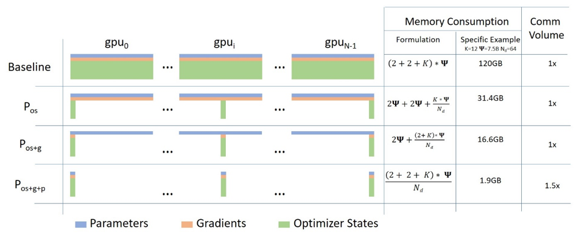
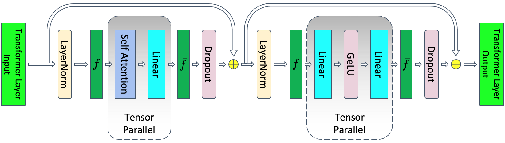
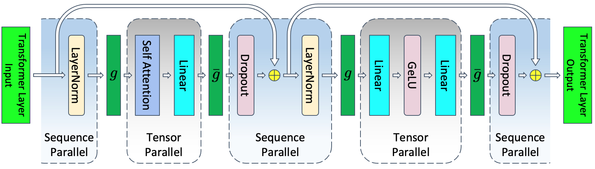
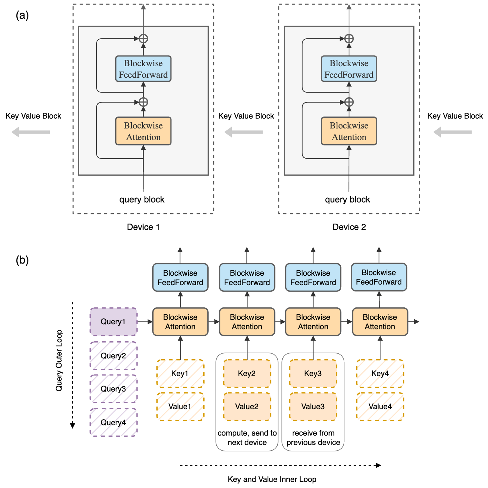
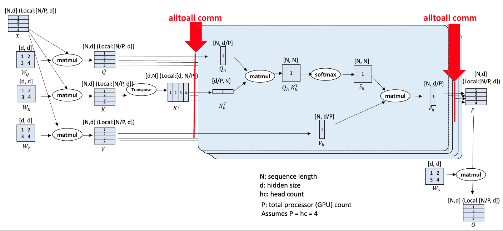
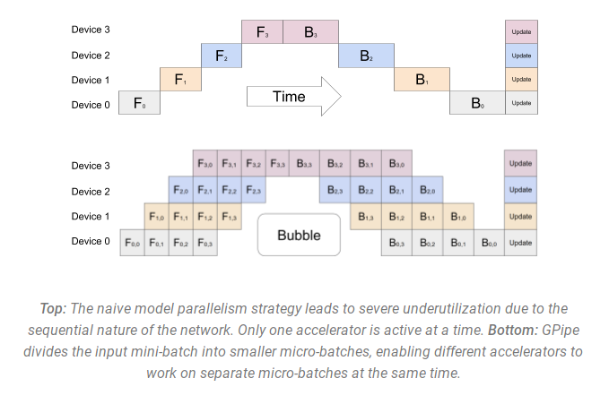
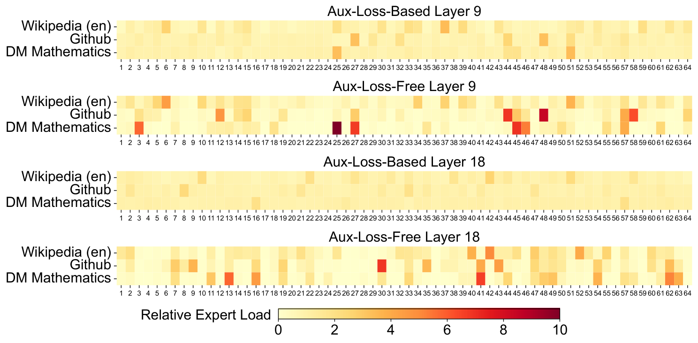

Parallelism From First Principles: Derivations and Cost Models
Prerequisites
This chapter assumes you know the transformer math. It does not assume you know systems. If any of the following is new, read it first:
- Computer architecture - the GPU memory hierarchy (HBM vs SRAM) and why FLOP/s and bytes/s are separate limits. The roofline argument used throughout this chapter depends on it.
- Concurrency - streams, asynchronous launches and overlap. "Overlap compute with communication" is a concurrency statement, and every cost model below depends on whether the overlap actually happens.
- Toolkit - running commands in a terminal, Python virtual environments,
exportof environment variables. The setup block below uses all three. - Networking - latency vs bandwidth, NVLink vs InfiniBand, RDMA, loopback and network interfaces, and how PyTorch distributed bootstraps (rendezvous,
MASTER_ADDR/MASTER_PORT). Every \beta in this chapter is a networking number. - Distributed systems - ranks, process groups, collectives, and why a slow rank stalls everyone.
- Execution model - GEMMs, FlashAttention and online softmax, and reading a profiler trace. The context-parallel section builds on online softmax.
- Collectives internals - the alpha-beta model, ring/tree algorithms, bus bandwidth, bisection bandwidth and oversubscription, and compute-communication overlap. This chapter uses its formulas without re-deriving them.
- Transformer architectures - GQA/MQA, SwiGLU, MoE layers. The head-count constraints and the expert-parallel sections use these details.
- Training arithmetic - FLOPs per token and memory per parameter. This chapter uses those results without re-deriving them.
You don't need the Linux/OS chapter, the beyond-transformers chapter, or the cluster chapters (Slurm, Kubernetes) here. Everything runs as local processes on one machine.
This chapter is the quantitative companion to the Model Parallelism survey. The survey explains what each technique is and links to the implementations. This chapter builds each technique from scratch in a few dozen lines of torch.distributed code that you can run on a laptop, checks that it computes exactly what the unsharded model computes, and then derives what it costs in memory and in bytes moved. The last part uses those formulas to choose a layout for two concrete models. The collective algorithms themselves (ring, tree, NVLS, how NCCL chooses between them) are covered in collectives internals. FLOPs-per-token and memory arithmetic for a single model are in training arithmetic.
Two kinds of numbers appear below. Measured: outputs of the scripts in this chapter, run on a MacBook CPU with several processes talking over the loopback network; these check correctness and count bytes, but their timings say nothing about GPUs. Estimated: step times and bandwidth costs for H100 clusters, computed from the stated assumptions with the cost-model scripts. None of the H100 numbers is a measured benchmark, and I note where real systems are known to differ.
Running the code: many processes on one machine
Distributed training runs one process per GPU. Each process is a rank, numbered 0 .. world_size-1. The processes find each other through a rendezvous: rank 0 listens on an address and port, everyone else connects there, and they agree on who is who. After that they talk through a backend: NCCL on NVIDIA GPUs, gloo on CPUs. Gloo implements the same collectives over ordinary TCP sockets, so the same code runs on a laptop with no GPU at all. That is what every demo in this chapter does. (Launching a process group on one machine is worked through step by step in collectives internals; the TCP rendezvous underneath is in networking.)
torchrun is the launcher. It starts --nproc-per-node copies of your script and sets the environment variables RANK, WORLD_SIZE, LOCAL_RANK, MASTER_ADDR and MASTER_PORT in each, so that dist.init_process_group("gloo") needs no arguments.
Setup used for this chapter (macOS on Apple Silicon, PyTorch 2.15.0, CPU only):
python3 -m venv /tmp/arith-venv
/tmp/arith-venv/bin/pip install torch numpy
export PATH=/tmp/arith-venv/bin:$PATH
mkdir -p /tmp/par-code && cd /tmp/par-code # save each script below here
export GLOO_SOCKET_IFNAME=lo0 # macOS: make gloo use the loopback interface
torchrun --nproc-per-node 4 --master-addr 127.0.0.1 collectives.py
On this Mac, leaving out --master-addr 127.0.0.1 and GLOO_SOCKET_IFNAME=lo0 made torchrun hang until I killed it after 60 s: gloo tried to resolve the machine's hostname to a non-loopback interface (interfaces and hostname resolution: networking). On Linux, GLOO_SOCKET_IFNAME=lo does the same job. You will also see harmless warnings about IPv6 address lookups and OMP_NUM_THREADS; they are omitted from the outputs below. The outputs are otherwise pasted verbatim. The alternative to torchrun is torch.multiprocessing.spawn(fn, nprocs=N), which forks the workers from inside one Python script; you then set MASTER_ADDR/MASTER_PORT yourself and pass rank and world_size to init_process_group.
Notation and hardware constants
| Symbol | Meaning |
|---|---|
| \Psi | number of model parameters |
| N | number of ranks in a collective (a rank is one process, normally driving one GPU) |
| M | message size in bytes (defined per collective below) |
| \alpha | per-message latency (seconds): fixed startup cost of one send |
| \beta | per-rank bandwidth (bytes/s) in one direction on the slowest link the collective crosses |
| F | achieved FLOP/s per GPU (not peak) |
| B, T, h | micro-batch size (sequences), sequence length, hidden size |
| L | number of transformer layers |
| t, p, d, c, e | tensor-, pipeline-, data-, context-, expert-parallel degree |
| m | number of micro-batches per pipeline per step |
Hardware used in the worked examples. These match H100 SXM specs:
- HBM (High Bandwidth Memory, the GPU's on-package DRAM, the memory "GPU memory" usually refers to): 80 GB per H100.
- NVLink (NVIDIA's GPU-to-GPU link inside a node, routed through NVSwitch chips so that any GPU can reach any other at full speed): 900 GB/s per GPU bidirectional, so \beta_{\text{nvl}} = 450\ \text{GB/s} per direction. Achieved NCCL bus bandwidth is lower. Measure yours with the network benchmarks.
- InfiniBand (IB) (the inter-node network; each GPU has its own NIC, a network interface card, and talks to it via RDMA, remote direct memory access, which means one machine writes directly into another machine's memory without going through either CPU): 400 Gb/s per GPU, so \beta_{\text{ib}} = 400/8 = 50\ \text{GB/s} per direction.
- Dense BF16 peak is 989 TFLOP/s. I assume 40% MFU (model FLOPs utilization: useful model FLOP/s divided by peak, defined in training arithmetic), so F = 0.4 \cdot 989 \times 10^{12} = 395.6 \times 10^{12}\ \text{FLOP/s}. This is an assumption, not a measurement.
A node here means 8 GPUs sharing one NVLink domain. A collective is a communication operation in which every rank of a group takes part, for example all of them summing a tensor together. NCCL is NVIDIA's library that implements collectives on GPUs. A kernel is a single function launched on the GPU. A CUDA stream is an ordered queue of kernels. Kernels on different streams may run concurrently, which is the mechanism behind every "overlap" claim in this chapter (see multiple streams in PyTorch and streams and what "async" means).
These constants live in one small module that the cost-model scripts below import:
# costmodel.py
# costmodel.py: alpha-beta collective costs and the hardware constants used in this chapter
NVL, IB = 450e9, 50e9 # bytes/s per GPU per direction: H100 NVLink, 400 Gb/s NIC
F = 0.4 * 989e12 # achieved FLOP/s per GPU at an assumed 40% MFU
ALPHA = 0.0 # set to ~5-20e-6 to include latency; large messages are bandwidth-bound
def t_allreduce(M, N, beta, alpha=ALPHA): # M = bytes per rank
return 2 * (N - 1) * alpha + 2 * (N - 1) / N * M / beta
def t_reduce_scatter(M, N, beta, alpha=ALPHA):
return (N - 1) * alpha + (N - 1) / N * M / beta
t_allgather = t_reduce_scatter # same cost: M = full gathered size
t_alltoall = t_reduce_scatter # pairwise exchange, full bisection assumed
if __name__ == "__main__":
M = 1e9
for N in (2, 8, 64, 1024):
print(f"N={N:5d}: all-reduce of 1 GB over IB {t_allreduce(M, N, IB)*1e3:6.1f} ms, "
f"with alpha=10us {t_allreduce(M, N, IB, 10e-6)*1e3:6.1f} ms")
$ python costmodel.py
N= 2: all-reduce of 1 GB over IB 20.0 ms, with alpha=10us 20.0 ms
N= 8: all-reduce of 1 GB over IB 35.0 ms, with alpha=10us 35.1 ms
N= 64: all-reduce of 1 GB over IB 39.4 ms, with alpha=10us 40.6 ms
N= 1024: all-reduce of 1 GB over IB 40.0 ms, with alpha=10us 60.4 ms
The bandwidth term of an all-reduce barely changes from 8 to 1024 ranks (35 ms to 40 ms for 1 GB), but with a 10 µs per-message latency the 1024-rank ring pays 20 ms of pure latency. That is the next section in one table.
Collective cost models (alpha-beta, ring)
What each collective does
Before costs, semantics. Each rank starts with a small tensor, and each collective rearranges or sums those tensors in a different way. Run this with 4 ranks and read the output column by column:
# collectives.py
# collectives.py: run with torchrun --nproc-per-node 4 --master-addr 127.0.0.1 collectives.py
import torch, torch.distributed as dist
dist.init_process_group("gloo") # gloo = CPU backend; on GPUs you'd use "nccl"
r, N = dist.get_rank(), dist.get_world_size()
def show(name, t): # print rank by rank, in order
for i in range(N):
if i == r:
print(f"{name:15s} rank {r}: {t.tolist()}", flush=True)
dist.barrier()
x = torch.arange(N, dtype=torch.float32) + 10 * r # (N,) rank r holds [10r, 10r+1, ...]
show("input", x)
ar = x.clone(); dist.all_reduce(ar) # every rank: elementwise sum over ranks
show("all_reduce", ar)
rs = torch.empty(1); dist.reduce_scatter_tensor(rs, x.clone()) # rank i: the i-th element of the sum
show("reduce_scatter", rs)
ag = torch.empty(N); dist.all_gather_into_tensor(ag, rs) # every rank: concatenation of all shards
show("all_gather(rs)", ag)
assert torch.equal(ag, ar) # AR == RS followed by AG
a2a = torch.empty(N); dist.all_to_all_single(a2a, x.clone()) # rank i sends its j-th element to rank j
show("all_to_all", a2a)
b = x.clone(); dist.broadcast(b, src=0) # everyone gets rank 0's tensor
show("broadcast", b)
dist.destroy_process_group()
$ torchrun --nproc-per-node 4 --master-addr 127.0.0.1 collectives.py
input rank 0: [0.0, 1.0, 2.0, 3.0]
input rank 1: [10.0, 11.0, 12.0, 13.0]
input rank 2: [20.0, 21.0, 22.0, 23.0]
input rank 3: [30.0, 31.0, 32.0, 33.0]
all_reduce rank 0: [60.0, 64.0, 68.0, 72.0]
all_reduce rank 1: [60.0, 64.0, 68.0, 72.0]
all_reduce rank 2: [60.0, 64.0, 68.0, 72.0]
all_reduce rank 3: [60.0, 64.0, 68.0, 72.0]
reduce_scatter rank 0: [60.0]
reduce_scatter rank 1: [64.0]
reduce_scatter rank 2: [68.0]
reduce_scatter rank 3: [72.0]
all_gather(rs) rank 0: [60.0, 64.0, 68.0, 72.0]
all_gather(rs) rank 1: [60.0, 64.0, 68.0, 72.0]
all_gather(rs) rank 2: [60.0, 64.0, 68.0, 72.0]
all_gather(rs) rank 3: [60.0, 64.0, 68.0, 72.0]
all_to_all rank 0: [0.0, 10.0, 20.0, 30.0]
all_to_all rank 1: [1.0, 11.0, 21.0, 31.0]
all_to_all rank 2: [2.0, 12.0, 22.0, 32.0]
all_to_all rank 3: [3.0, 13.0, 23.0, 33.0]
broadcast rank 0: [0.0, 1.0, 2.0, 3.0]
broadcast rank 1: [0.0, 1.0, 2.0, 3.0]
broadcast rank 2: [0.0, 1.0, 2.0, 3.0]
broadcast rank 3: [0.0, 1.0, 2.0, 3.0]
- all-reduce: everyone ends with the elementwise sum. Used for DDP gradients and tensor-parallel partial sums.
- reduce-scatter: the sum is computed, but rank i keeps only the i-th slice. Used for sharded gradients (ZeRO, FSDP) and sequence parallelism.
- all-gather: every rank contributes a slice and everyone ends with the concatenation. Used to reassemble sharded parameters.
- all-to-all: rank i sends its j-th slice to rank j. It is a distributed transpose. Used for MoE token dispatch and Ulysses attention.
- broadcast: rank 0's tensor is copied to everyone. Used at initialization.
The assert in the script checks the identity the rest of this chapter leans on: an all-reduce is exactly a reduce-scatter followed by an all-gather.
The ring algorithm, built by hand
The standard way to all-reduce large tensors is the ring: arrange the ranks in a circle, cut the tensor into N chunks, and pass chunks to the right neighbour. In N-1 steps of "send a chunk, add the one you received" each rank ends up owning the full sum of one chunk (that is a reduce-scatter). In N-1 more steps of "send the finished chunk along" everyone gets every finished chunk (that is an all-gather). Each step every rank sends M/N bytes, so the total sent per rank is 2(N-1)/N \cdot M. Here it is with point-to-point isend/irecv (dist.isend(t, dst) and dist.irecv(t, src) start a non-blocking send to or receive from one rank and return a request object whose .wait() blocks until the transfer is done; posting the send and the receive before waiting on either is what keeps two neighbours from deadlocking while each waits for the other), checked against dist.all_reduce and with the bytes counted:
# ring_allreduce.py
# ring_allreduce.py: torchrun --nproc-per-node 4 --master-addr 127.0.0.1 ring_allreduce.py
import torch, torch.distributed as dist
dist.init_process_group("gloo")
r, N = dist.get_rank(), dist.get_world_size()
right, left = (r + 1) % N, (r - 1) % N
sent = 0 # bytes this rank puts on the wire
def ring_step(send_chunk, recv_chunk):
global sent
reqs = [dist.isend(send_chunk.contiguous(), right), dist.irecv(recv_chunk, left)]
for q in reqs:
q.wait()
sent += send_chunk.numel() * send_chunk.element_size()
def ring_all_reduce(x): # x: (M,) with M divisible by N
chunks = list(x.view(N, -1).clone()) # N chunks of M/N elements
buf = torch.empty_like(chunks[0])
for i in range(N - 1): # phase 1, reduce-scatter: after N-1 steps rank r owns sum of chunk (r+1)%N
s, rcv = (r - i) % N, (r - i - 1) % N
ring_step(chunks[s], buf)
chunks[rcv] += buf
for i in range(N - 1): # phase 2, all-gather: circulate the finished chunks
s, rcv = (r + 1 - i) % N, (r - i) % N
ring_step(chunks[s], buf)
chunks[rcv] = buf.clone()
return torch.cat(chunks)
torch.manual_seed(r)
M = 1 << 20 # 1M fp32 elements = 4 MiB per rank
x = torch.randn(M)
mine = ring_all_reduce(x)
ref = x.clone(); dist.all_reduce(ref)
assert torch.allclose(mine, ref, atol=1e-4)
if r == 0:
nbytes = M * 4
print(f"ring all-reduce matches dist.all_reduce; rank 0 sent {sent:,} B "
f"= {sent/nbytes:.3f} x M; formula 2(N-1)/N = {2*(N-1)/N:.3f}")
dist.destroy_process_group()
$ torchrun --nproc-per-node 4 --master-addr 127.0.0.1 ring_allreduce.py
ring all-reduce matches dist.all_reduce; rank 0 sent 6,291,456 B = 1.500 x M; formula 2(N-1)/N = 1.500
The key property is that per-rank traffic is about 2M no matter how many ranks there are: each rank only ever talks to its two neighbours, and the work is spread evenly. That is why the bandwidth term below barely depends on N.
The formulas
The derivations are in collectives internals. The results for the ring algorithm on N ranks are:
all-reduce (every rank ends with the sum of all ranks' M-byte buffers):
reduce-scatter (input M bytes per rank; rank i ends with the summed i-th 1/N slice):
all-gather (rank i holds M/N; every rank ends with the full M bytes):
all-to-all (rank i sends a distinct M/N slice to each rank j; M = rank's total send buffer; pairwise exchange, assumes full bisection bandwidth):
Three facts are used repeatedly:
- \text{AR} = \text{RS} + \text{AG}, exactly in volume. Every rank sends 2(N-1)/N \cdot M bytes for an all-reduce and (N-1)/N \cdot M for each half. This identity drives ZeRO, FSDP and sequence parallelism.
- The bandwidth term barely depends on N, and the latency term grows linearly in N. At large N and small M, NCCL switches to tree/NVLS algorithms with O(\log N) latency. The bandwidth formulas above remain a good lower bound for large messages.
- \beta is the bottleneck link. A ring that spans nodes runs at roughly NIC speed (50 GB/s), not NVLink speed, even though most of its hops are intra-node. NCCL runs one ring per NIC in parallel, which is why the per-GPU NIC bandwidth is the right \beta.
From here on, "volume" means bytes sent per rank, and I often drop the (N-1)/N factor when N is large.
Measuring α and β
\alpha and \beta are not datasheet numbers; you measure them by timing a collective at many message sizes and fitting a line. The same procedure works on a laptop over loopback and on a cluster over InfiniBand (with NCCL and GPU tensors instead of gloo and CPU tensors):
# alphabeta.py
# alphabeta.py: torchrun --nproc-per-node 4 --master-addr 127.0.0.1 alphabeta.py
import time, torch, torch.distributed as dist
dist.init_process_group("gloo")
r, N = dist.get_rank(), dist.get_world_size()
sizes = [2**k for k in range(10, 27, 2)] # 1 KiB .. 64 MiB
times = []
for nbytes in sizes:
x = torch.ones(nbytes // 4)
for _ in range(3):
dist.all_reduce(x) # warm-up
best = float("inf")
for _ in range(10):
dist.barrier(); t = time.perf_counter(); dist.all_reduce(x); best = min(best, time.perf_counter() - t)
times.append(best)
if r == 0:
# fit t = A + B * M, then map onto the ring model t = 2(N-1)α + 2(N-1)/N · M/β
X = torch.tensor([[1.0, m] for m in sizes], dtype=torch.float64)
A, B = torch.linalg.lstsq(X, torch.tensor(times, dtype=torch.float64)[:, None]).solution.flatten().tolist()
alpha, beta = A / (2 * (N - 1)), 2 * (N - 1) / N / B
print(f"{'size':>11} {'time':>9} {'busbw':>10}")
for m, t in zip(sizes, times):
print(f"{m:>11,} {t*1e6:>7.0f}us {2*(N-1)/N*m/t/1e9:>7.2f}GB/s")
print(f"fit: alpha = {alpha*1e6:.1f} us per message, beta = {beta/1e9:.2f} GB/s per rank (loopback, gloo, {N} ranks)")
print(f"half-bandwidth message size M_1/2 = alpha*beta*N = {alpha*beta*N/1e3:.0f} KB")
dist.destroy_process_group()
$ torchrun --nproc-per-node 4 --master-addr 127.0.0.1 alphabeta.py
size time busbw
1,024 576us 0.00GB/s
4,096 580us 0.01GB/s
16,384 616us 0.04GB/s
65,536 344us 0.29GB/s
262,144 348us 1.13GB/s
1,048,576 550us 2.86GB/s
4,194,304 1439us 4.37GB/s
16,777,216 6713us 3.75GB/s
67,108,864 27174us 3.70GB/s
fit: alpha = 48.9 us per message, beta = 3.76 GB/s per rank (loopback, gloo, 4 ranks)
half-bandwidth message size M_1/2 = alpha*beta*N = 735 KB
The shape is what matters, not the loopback numbers. Small messages cost a few hundred microseconds regardless of size (\alpha dominates; the jitter between them is noise on a shared laptop), large messages approach a fixed bandwidth (\beta dominates), and the crossover is M_{1/2} = N \cdot \alpha \cdot \beta, the message size at which you get half the peak bandwidth. On an H100 cluster \alpha is a few to tens of microseconds and \beta is tens to hundreds of GB/s, so M_{1/2} is in the MB range. That is why DDP and FSDP group gradients into buckets of tens of MB. "busbw" (bus bandwidth) here is 2(N-1)/N \cdot M / t, the same normalization nccl-tests (NVIDIA's standard collective benchmark, see collectives internals) uses (algbw vs busbw), so that a perfect ring reports the link bandwidth regardless of N. The fit is from one run on a busy laptop, so treat the exact values as an anecdote.
Data parallelism (DDP)
DDP (DistributedDataParallel) keeps a full replica of the model on each of the d ranks, gives each a different slice of the batch, and averages gradients with an all-reduce before the optimizer step. Because the loss is a mean over examples, the average of per-slice gradients equals the full-batch gradient, so every replica takes exactly the step that a single huge GPU would.
Bucketing and overlap
Gradients become available in roughly reverse layer order during backward. PyTorch DDP:
- Assigns parameters to buckets: contiguous flat buffers,
bucket_cap_mb=25by default, filled in reversemodel.parameters()order. When you leavebucket_cap_mbat its default, the first bucket is capped smaller (1 MiB,dist._DEFAULT_FIRST_BUCKET_BYTES, confirmed as 1048576 in torch 2.15) so that the first all-reduce launches early. - Registers an autograd hook on each parameter. When every gradient in a bucket is ready, it launches an asynchronous all-reduce of that bucket on a separate NCCL stream while backward keeps computing on the compute stream.
- After the first iteration, rebuilds the buckets in the observed gradient-ready order (
_rebuild_buckets). In torch 2.15 the default (nofind_unused_parameters, nostatic_graph) is to put everything in one bucket for the first iteration and only build real buckets from the observed order; the demo below shows this. - With
gradient_as_bucket_view=True,param.gradis a view into the bucket, which saves one gradient-sized copy.
The point of bucketing is the \alpha term. One all-reduce per parameter tensor pays 2(N-1)\alpha hundreds of times. One all-reduce of the whole model can't start until backward finishes, so nothing overlaps. A bucket of 25 MB is large enough to be bandwidth-bound and small enough to give many overlap opportunities. The exposed communication is the last bucket, plus any part of the total that doesn't fit under backward compute.
Gradient accumulation uses no_sync(): skip the all-reduce on the first k-1 micro-batches. This costs nothing extra in memory, because the gradients exist anyway.
All three behaviours, observed with a comm hook (a function DDP calls once per bucket instead of its built-in all-reduce; here it records the bucket and then does the same all-reduce-and-average):
# ddp_demo.py
# ddp_demo.py: torchrun --nproc-per-node 2 --master-addr 127.0.0.1 ddp_demo.py
import torch, torch.nn as nn, torch.distributed as dist
from torch.nn.parallel import DistributedDataParallel as DDP
dist.init_process_group("gloo")
r, N = dist.get_rank(), dist.get_world_size()
def make_model():
torch.manual_seed(0) # identical init on every rank (DDP also broadcasts rank 0's weights)
return nn.Sequential(*[nn.Linear(512, 512) for _ in range(8)]) # 8 x 262,656 params = 8.0 MiB fp32 in total
torch.manual_seed(123)
X, Y = torch.randn(16, 512), torch.randn(16, 512) # global batch, same on all ranks
lo, hi = r * 16 // N, (r + 1) * 16 // N # each rank takes its slice
buckets = []
def recording_hook(state, bucket): # a DDP comm hook: called once per gradient bucket
buckets.append((bucket.index(), bucket.buffer().numel() * 4 / 2**20, len(bucket.parameters())))
fut = dist.all_reduce(bucket.buffer(), async_op=True).get_future()
return fut.then(lambda f: f.value()[0] / N) # all-reduce, then average, exactly what DDP does by default
model = DDP(make_model(), bucket_cap_mb=2) # small buckets so a toy model has several
model.register_comm_hook(None, recording_hook)
nn.functional.mse_loss(model(X[lo:hi]), Y[lo:hi]).backward()
ref = make_model() # single process, whole batch
nn.functional.mse_loss(ref(X), Y).backward()
err = max((p.grad - q.grad).abs().max().item() for p, q in zip(model.module.parameters(), ref.parameters()))
if r == 0:
print(f"max |grad_DDP - grad_full_batch| = {err:.2e}")
print("iteration 1 buckets (index, MiB, #params):", [(i, round(mb, 2), n) for i, mb, n in buckets])
for it in (2, 3): # buckets are rebuilt after iteration 1 in gradient-ready order
buckets.clear(); model.zero_grad()
nn.functional.mse_loss(model(X[lo:hi]), Y[lo:hi]).backward()
if r == 0:
print(f"iteration {it} buckets:", [(i, round(mb, 2), n) for i, mb, n in buckets])
# gradient accumulation: no_sync() skips the all-reduce on all but the last micro-batch
buckets.clear()
model.zero_grad()
with model.no_sync():
nn.functional.mse_loss(model(X[lo:hi]), Y[lo:hi]).backward()
n_sync_off = len(buckets)
nn.functional.mse_loss(model(X[lo:hi]), Y[lo:hi]).backward()
if r == 0:
print(f"all-reduces during no_sync micro-batch: {n_sync_off}, during the final micro-batch: {len(buckets)}")
dist.destroy_process_group()
$ torchrun --nproc-per-node 2 --master-addr 127.0.0.1 ddp_demo.py
max |grad_DDP - grad_full_batch| = 4.66e-10
iteration 1 buckets (index, MiB, #params): [(0, 8.02, 16)]
iteration 2 buckets: [(0, 2.0, 4), (1, 2.0, 4), (2, 2.0, 4), (3, 2.0, 4)]
iteration 3 buckets: [(0, 2.0, 4), (1, 2.0, 4), (2, 2.0, 4), (3, 2.0, 4)]
all-reduces during no_sync micro-batch: 0, during the final micro-batch: 4
The DDP gradient equals the single-process full-batch gradient to 5e-10 (float rounding from a different summation order). The first iteration ran as one 8 MiB bucket; from iteration 2 the 2 MiB cap produced four buckets of 4 parameters each (the weights and biases of two layers, 2 MiB). Inside no_sync() no all-reduce ran at all.
Communication volume
With b_g bytes per gradient element (2 for bf16 gradients, 4 for fp32 gradients as in classic AMP, automatic mixed precision via torch.autocast, with fp32 params; see mixed precision internals), one all-reduce of all gradients per step sends:
This is independent of batch size and of d.
When is DDP comm-bound?
Let T_g be the tokens each GPU processes per optimizer step. Ignoring attention FLOPs, training compute is 6\Psi FLOPs per token (2 forward, 4 backward). See arithmetic.
t_{\text{backward}} is the only window into which the all-reduce can overlap.
Comm is fully hidden only if t_{\text{comm}} \le t_{\text{backward}}:
Ψ cancels. Whether DDP is comm-bound depends only on tokens per GPU per step, achieved FLOP/s and bandwidth, not on model size. Bigger models need more memory, but they are not more comm-bound under DDP.
# ddp_threshold.py
from costmodel import F, IB, NVL
for name, beta in [("IB", IB), ("NVLink", NVL)]:
for b_g in (2, 4):
print(f"{name:6s} grad bytes {b_g}: hide under backward if T_g >= b_g*F/(2*beta) = {b_g*F/(2*beta):,.0f} tokens/GPU/step; "
f"break-even vs whole step b_g*F/(3*beta) = {b_g*F/(3*beta):,.0f}")
$ python ddp_threshold.py
IB grad bytes 2: hide under backward if T_g >= b_g*F/(2*beta) = 7,912 tokens/GPU/step; break-even vs whole step b_g*F/(3*beta) = 5,275
IB grad bytes 4: hide under backward if T_g >= b_g*F/(2*beta) = 15,824 tokens/GPU/step; break-even vs whole step b_g*F/(3*beta) = 10,549
NVLink grad bytes 2: hide under backward if T_g >= b_g*F/(2*beta) = 879 tokens/GPU/step; break-even vs whole step b_g*F/(3*beta) = 586
NVLink grad bytes 4: hide under backward if T_g >= b_g*F/(2*beta) = 1,758 tokens/GPU/step; break-even vs whole step b_g*F/(3*beta) = 1,172
For bf16 gradients (b_g = 2), F = 395.6\ \text{TFLOP/s} and \beta= 50\ \text{GB/s}, the all-reduce hides under backward only above about 7,912 tokens per GPU per step, and breaks even against the whole step (no overlap) at about 5,275. With fp32 gradient reduction, double these. If the gradient all-reduce stays on NVLink (single node, 450 GB/s), the threshold drops to about 880 tokens. These thresholds assume perfect overlap and full achieved bandwidth. In practice, give yourself 2x headroom.
ZeRO and FSDP
Memory per GPU
With Adam and mixed precision, each parameter needs 2 bytes (bf16 weights), 2 bytes (bf16 gradients) and K = 12 bytes of optimizer state (fp32 master weights, fp32 momentum, fp32 variance), for 16 bytes in total. See ZeRO (Rajbhandari et al., arXiv 1910.02054). The observation behind ZeRO is that under DDP every rank stores and updates an identical copy of all of this. Sharding over d data-parallel ranks means each rank keeps, and updates, only 1/d of it:
| Stage | Sharded | Bytes / GPU | 70.55B params, d=64 |
|---|---|---|---|
| DDP | nothing | 16\Psi | 1128.8 GB |
| ZeRO-1 | optimizer states | 4\Psi+ 12\Psi/d | 295.4 GB |
| ZeRO-2 | + gradients | 2\Psi+ 14\Psi/d | 156.5 GB |
| ZeRO-3 / FSDP | + parameters | 16\Psi/d | 17.6 GB |
# zero_mem.py
def per_gpu_gb(psi, d, stage, K=12): # bf16 params (2) + bf16 grads (2) + K bytes of optimizer state
p, g, o = 2 * psi, 2 * psi, K * psi
if stage >= 1: o /= d
if stage >= 2: g /= d
if stage >= 3: p /= d
return (p + g + o) / 1e9
psi, d = 70.55e9, 64
for st, name in enumerate(["DDP", "ZeRO-1", "ZeRO-2", "ZeRO-3 / FSDP"]):
print(f"{name:14s} {per_gpu_gb(psi, d, st):7.1f} GB/GPU")
b = 2
print(f"comm per rank per step (bf16): DDP {2*b*psi/1e9:.0f} GB, ZeRO-1/2 {2*b*psi/1e9:.0f} GB, ZeRO-3 {3*b*psi/1e9:.0f} GB")
layer = 855.7e6
print(f"FSDP prefetch buffers for one 70B layer: 2 x params {2*2*layer/1e9:.1f} GB + grads {2*layer/1e9:.1f} GB")
print(f"HSDP shard=8 for 70B: {16*psi/8/1e9:.0f} GB/GPU of states")
$ python zero_mem.py
DDP 1128.8 GB/GPU
ZeRO-1 295.4 GB/GPU
ZeRO-2 156.5 GB/GPU
ZeRO-3 / FSDP 17.6 GB/GPU
comm per rank per step (bf16): DDP 282 GB, ZeRO-1/2 282 GB, ZeRO-3 423 GB
FSDP prefetch buffers for one 70B layer: 2 x params 3.4 GB + grads 1.7 GB
HSDP shard=8 for 70B: 141 GB/GPU of states
The ZeRO stages and what each shards:

(source)
These exclude activations, temporary unsharded buffers and fragmentation.
FSDP2's usual setup (MixedPrecisionPolicy(param_{\text{dtype}}=bf16, reduce_{\text{dtype}}=fp32)) stores the sharded parameter in fp32 and uses it as the master copy. The sharded state is then 4\ (\text{fp32 param}) + 4\ (\text{fp32 grad}) + 8\ (\text{Adam } m, v) = 16\Psi/d, the same total with a different split. The bf16 copy exists only transiently, in the all-gathered (unsharded) buffer.
A sharded optimizer step, by hand
The mechanism is short enough to write out. Each rank computes gradients for the full model on its slice of the batch, exactly as in DDP. Then, instead of an all-reduce, a reduce-scatter gives each rank the averaged gradient of only its 1/d of the parameters; each rank runs AdamW on that slice only (so Adam's m and v exist only for that slice); and an all-gather puts the updated parameters back together. This is ZeRO-2 (ZeRO-1 differs only in keeping the full gradient buffer around):
# zero_step.py
# zero_step.py: torchrun --nproc-per-node 4 --master-addr 127.0.0.1 zero_step.py
# A ZeRO-2 style step by hand: reduce-scatter grads, AdamW on my shard only, all-gather params.
import torch, torch.nn as nn, torch.distributed as dist
dist.init_process_group("gloo")
r, N = dist.get_rank(), dist.get_world_size()
def make_model():
torch.manual_seed(0)
return nn.Sequential(nn.Linear(256, 1024), nn.GELU(), nn.Linear(1024, 256))
torch.manual_seed(1)
X, Y = torch.randn(32, 256), torch.randn(32, 256) # global batch
lo, hi = r * 32 // N, (r + 1) * 32 // N
model = make_model()
params = list(model.parameters())
numel = sum(p.numel() for p in params)
pad = (-numel) % N # flat buffer must split evenly into N shards
shard = (numel + pad) // N
flat = torch.cat([p.detach().flatten() for p in params] + [torch.zeros(pad)]) # (numel + pad,)
master = flat[r * shard:(r + 1) * shard].clone().requires_grad_() # (shard,) fp32 master copy of MY shard
opt = torch.optim.AdamW([master], lr=1e-2) # Adam m, v exist only for my shard
sent = 0
for step in range(3):
for p in params:
p.grad = None
nn.functional.mse_loss(model(X[lo:hi]), Y[lo:hi]).backward()
g = torch.cat([p.grad.flatten() for p in params] + [torch.zeros(pad)]) / N # (numel + pad,) local grad / N
g_shard = torch.empty(shard)
dist.reduce_scatter_tensor(g_shard, g) # I receive the summed (= averaged) grad of my shard only
sent += g.numel() * 4 * (N - 1) // N
master.grad = g_shard
opt.step() # update 1/N of the parameters
full = torch.empty(numel + pad)
dist.all_gather_into_tensor(full, master.detach()) # everyone gets everyone's updated shard
sent += shard * 4 * (N - 1)
torch.nn.utils.vector_to_parameters(full[:numel], params)
ref = make_model() # reference: one process, whole batch, plain AdamW
ropt = torch.optim.AdamW(ref.parameters(), lr=1e-2)
for step in range(3):
ropt.zero_grad()
nn.functional.mse_loss(ref(X), Y).backward()
ropt.step()
err = max((p - q).abs().max().item() for p, q in zip(model.parameters(), ref.parameters()))
state = sum(t.numel() * 4 for t in opt.state[master].values() if t.dim() > 0)
if r == 0:
print(f"params {numel:,}; max |ZeRO - reference| after 3 steps = {err:.2e}")
print(f"Adam state on this rank: {state:,} B (unsharded would be {8*numel:,} B, ratio 1/{8*numel/state:.0f})")
print(f"bytes sent per rank per step: {sent/3:,.0f} = {sent/3/(4*numel):.3f} x (4 B x params); "
f"DDP all-reduce would be 2(N-1)/N = {2*(N-1)/N:.3f}x")
dist.destroy_process_group()
$ torchrun --nproc-per-node 4 --master-addr 127.0.0.1 zero_step.py
params 525,568; max |ZeRO - reference| after 3 steps = 1.03e-05
Adam state on this rank: 1,051,136 B (unsharded would be 4,204,544 B, ratio 1/4)
bytes sent per rank per step: 3,153,408 = 1.500 x (4 B x params); DDP all-reduce would be 2(N-1)/N = 1.500x
After three steps the sharded model matches the single-process reference to 1e-5 (the gradients differ in the last bits because they were summed in a different order, and Adam's normalization amplifies those differences early in training). Each rank holds a quarter of the Adam state, and the bytes sent are exactly those of an all-reduce: 1.5 = 2(N-1)/N times the gradient size at N = 4. Sharding the optimizer is free in communication.
Communication volume: why ZeRO-3 is 1.5x DDP
Count bf16 bytes per rank per step, with b = 2:
- DDP: all-reduce of gradients, 2b\Psi.
- ZeRO-1/2: reduce-scatter the gradients (each rank needs only its gradient shard to update its optimizer shard), b\Psi. Then all-gather the updated bf16 parameters, b\Psi. Total 2b\Psi, the same as DDP. This is just the \text{AR} = \text{RS} + \text{AG} identity with the optimizer step inserted in the middle, as measured above.
- ZeRO-3: parameters are not resident, so:
- forward: all-gather each layer's params before use, b\Psi
- backward: all-gather them again, because they were freed after forward, b\Psi
- backward: reduce-scatter gradients, b\Psi
- no final all-gather, because each rank updates only its own shard and the next forward will gather
- total 3b\Psi = 1.5 \times V_{\text{DDP}}
Gradient accumulation changes this. ZeRO-3 with reshard_after_forward=True repeats the two all-gathers for each micro-batch. If it also reduce-scatters every micro-batch, as it does by default, the cost becomes 3b\Psi\cdot k for k micro-batches. With FSDP2 you can trade memory for volume: reshard_after_forward=False keeps unsharded params from forward to backward (which is ZeRO-2 behaviour, 2b\Psi), and model.set_requires_gradient_sync(False) on all but the last micro-batch accumulates unsharded gradients locally. The survey's discussion of gradient accumulation steps (GAS) covers the DeepSpeed side.
The comm-bound condition is the same derivation as for DDP, with 3b\Psi in place of 2b\Psi. Forward all-gathers can overlap with forward compute, so the window is the whole step:
FSDP2 in practice
PyTorch's FSDP2 does all of the above for you. fully_shard(module, mesh=...) replaces each parameter of module with a DTensor (a "distributed tensor": a tensor object that knows its global shape and how it is split across a mesh of ranks) sharded on dim 0. Each fully_shard-wrapped module becomes one unit of communication: one all-gather of its parameters before its forward, one reduce-scatter of its gradients after its backward. It runs on CPU with gloo too:
# fsdp2_demo.py
# fsdp2_demo.py: torchrun --nproc-per-node 4 --master-addr 127.0.0.1 fsdp2_demo.py
import torch, torch.nn as nn, torch.distributed as dist
from torch.distributed.device_mesh import init_device_mesh
from torch.distributed.fsdp import fully_shard
dist.init_process_group("gloo")
r, N = dist.get_rank(), dist.get_world_size()
mesh = init_device_mesh("cpu", (N,))
def make_model():
torch.manual_seed(0)
return nn.Sequential(nn.Linear(256, 1024), nn.GELU(), nn.Linear(1024, 256))
torch.manual_seed(1)
X, Y = torch.randn(32, 256), torch.randn(32, 256)
lo, hi = r * 32 // N, (r + 1) * 32 // N
model = make_model()
for layer in model:
if isinstance(layer, nn.Linear):
fully_shard(layer, mesh=mesh) # each Linear is one FSDP unit: one all-gather / reduce-scatter
fully_shard(model, mesh=mesh)
w = model[0].weight
if r == 0:
print(f"model[0].weight: {type(w).__name__}, global {tuple(w.shape)}, local shard {tuple(w.to_local().shape)}, "
f"placement {w.placements}")
opt = torch.optim.AdamW(model.parameters(), lr=1e-2)
for step in range(3):
opt.zero_grad()
nn.functional.mse_loss(model(X[lo:hi]), Y[lo:hi]).backward()
opt.step()
ref = make_model()
ropt = torch.optim.AdamW(ref.parameters(), lr=1e-2)
for step in range(3):
ropt.zero_grad()
nn.functional.mse_loss(ref(X), Y).backward()
ropt.step()
err = max((p.full_tensor() - q).abs().max().item() for p, q in zip(model.parameters(), ref.parameters()))
local = sum(p.to_local().numel() for p in model.parameters())
if r == 0:
print(f"max |FSDP2 - reference| after 3 steps = {err:.2e}; params held on rank 0: {local:,} of "
f"{sum(q.numel() for q in ref.parameters()):,}")
dist.destroy_process_group()
$ torchrun --nproc-per-node 4 --master-addr 127.0.0.1 fsdp2_demo.py
model[0].weight: DTensor, global (1024, 256), local shard (256, 256), placement (Shard(dim=0),)
max |FSDP2 - reference| after 3 steps = 1.22e-05; params held on rank 0: 131,392 of 525,568
Rank 0 holds 131,392 of 525,568 parameters: a quarter of every weight's rows, plus a quarter of each bias. The trained parameters match the single-process reference.
Prefetching
FSDP overlaps by running layer i+1's all-gather on a separate stream while layer i computes:
- Forward prefetch: issue AG(i+1) before compute(i). FSDP2 does this implicitly, one layer ahead.
module.set_modules_to_forward_prefetch([...])prefetches more (used in the HSDP demo below). - Backward prefetch: issue AG(i-1) before RS(i), so the next layer's parameters arrive while the current layer's gradients are being reduced (FSDP1
BackwardPrefetch.BACKWARD_PRE; FSDP2 hasset_modules_to_backward_prefetch). - Memory cost: about 2 unsharded layers of bf16 params, plus 1 unsharded layer of gradients during backward. For a 70B Llama layer (855.7M params) that is 2 \cdot 2 \cdot 855.7 \times 10^{6} \approx 3.4\ \text{GB} plus about 1.7 GB, which is small next to activations. Deeper prefetch buys more slack for late all-gathers at one layer of memory per step of depth:
# prefetch_mem.py
layer_params, b = 855.7e6, 2 # one Llama-3-70B layer, bf16
for depth in (1, 2, 4): # unsharded layers resident: running + prefetched
params = (depth + 1) * layer_params * b
print(f"prefetch depth {depth}: unsharded params {params/1e9:.1f} GB + one layer of grads {layer_params*b/1e9:.1f} GB")
$ python prefetch_mem.py
prefetch depth 1: unsharded params 3.4 GB + one layer of grads 1.7 GB
prefetch depth 2: unsharded params 5.1 GB + one layer of grads 1.7 GB
prefetch depth 4: unsharded params 8.6 GB + one layer of grads 1.7 GB
Prefetch depth is limited by memory. Overlap is limited by the CPU: if the Python thread falls behind (too many small modules, CPU-bound launches), the all-gather is issued late and is exposed. This is the most common reason FSDP underperforms its cost model. You can only see it in a GPU profiler trace (Nsight Systems, verifying overlap in a trace) (look for all-gather kernels that start after the compute stream goes idle); see Profiling and optimization.
FSDP1 vs FSDP2
FSDP1 (FullyShardedDataParallel) |
FSDP2 (fully_shard) |
|
|---|---|---|
| Unit of sharding | one FlatParameter per wrapped module: all params flattened and concatenated, then split into d equal 1-D chunks |
each parameter is a DTensor sharded on dim 0 (Shard(0)) |
| Consequences | a parameter may straddle ranks; per-param attributes (dtype, requires_grad, weight decay) need use_orig_params=True and are awkward; padding at the end |
per-param semantics preserved; frozen params, per-param optimizers, fp8 all-gather are natural |
| Composition with TP | params are already DTensors after TP, so flat-param over DTensor is clumsy | 2-D DTensor with placements (Shard(0) on dp, Shard(k) on tp) on a 2-D mesh |
| Memory management | recordStream-based (Tensor.record_stream tells the caching allocator that another CUDA stream still uses a tensor, so the allocator delays reusing its memory until that stream's queued work is done, at a time that depends on GPU progress), which can make memory release non-deterministic |
copy-in/copy-out into a per-group flat buffer, deterministic frees |
| Communication | one AG/RS per FlatParameter | one AG/RS per fully_shard group (FSDP2 also flattens for the collective, then views back out) |
The "straddle" row, made concrete for a few Llama-8B-shaped parameters on 8 ranks:
# flatparam.py
# flatparam.py: where FSDP1's FlatParameter chunk boundaries fall, vs FSDP2's per-parameter dim-0 sharding
params = {"q.weight": (4096, 4096), "q.bias": (4096,), "norm.weight": (4096,), "mlp.weight": (14336, 4096)}
d = 8
sizes = {n: (s[0] * s[1] if len(s) == 2 else s[0]) for n, s in params.items()}
total = sum(sizes.values()); chunk = -(-total // d) # FSDP1: flatten, concatenate, split in d equal chunks
start = 0
for n, sz in sizes.items():
ranks = sorted({(start + i) // chunk for i in (0, sz - 1)})
print(f"{n:12s} FSDP1 ranks {ranks[0]}..{ranks[-1]} | FSDP2 every rank holds rows "
f"{params[n][0] // d} of {params[n][0]}")
start += sz
$ python flatparam.py
q.weight FSDP1 ranks 0..1 | FSDP2 every rank holds rows 512 of 4096
q.bias FSDP1 ranks 1..1 | FSDP2 every rank holds rows 512 of 4096
norm.weight FSDP1 ranks 1..1 | FSDP2 every rank holds rows 512 of 4096
mlp.weight FSDP1 ranks 1..7 | FSDP2 every rank holds rows 1792 of 14336
Under FSDP1, rank 1 holds the end of q.weight, all of q.bias and norm.weight, and the start of mlp.weight, so "apply no weight decay to norms" or "freeze q" has to be expressed in terms of slices of one flat buffer. Under FSDP2 every rank holds 1/8 of the rows of each parameter, as a separate tensor.
Communication volume is identical. The differences are in memory determinism, composability and correctness of per-parameter features. Reference: PyTorch FSDP (Zhao et al., arXiv 2304.11277) for FSDP1, TorchTitan (Liang et al., arXiv 2410.06511) for FSDP2 in a 4D stack.
HSDP (hybrid sharding)
Shard within a group of s ranks and replicate across r = d/s groups. Pick s = one node so that the AG/RS traffic stays on NVLink:
# hsdp_cost.py
from costmodel import IB, NVL
psi, b, d, s = 70.55e9, 2, 1024, 8
r = d // s
flat_ib = 3 * b * psi # flat ZeRO-3 over all d ranks crosses IB
intra = 3 * b * psi * (s - 1) / s
inter = 2 * b * (psi / s) * (r - 1) / r
print(f"flat ZeRO-3: {flat_ib/1e9:.0f} GB over IB | HSDP s={s}: {intra/1e9:.0f} GB NVLink + {inter/1e9:.1f} GB IB "
f"({flat_ib/inter:.1f}x fewer IB bytes) | states {16*psi/s/1e9:.0f} GB/GPU")
print(f"largest model with 16*psi/8 <= 40 GB: {40e9*8/16/1e9:.0f}B params")
$ python hsdp_cost.py
flat ZeRO-3: 423 GB over IB | HSDP s=8: 370 GB NVLink + 35.0 GB IB (12.1x fewer IB bytes) | states 141 GB/GPU
largest model with 16*psi/8 <= 40 GB: 20B params
Inter-node bytes drop by 1.5 \cdot s relative to flat ZeRO-3, but memory is only divided by s. For a 70B model with s = 8, 16 \cdot 70.55 \times 10^{9}/8 = 141\ \text{GB}, which doesn't fit. HSDP (shard = 8) is a tool for models where 16\Psi/8 = 2\Psi bytes fits, roughly \Psi\lesssim 20\text{B} on 80 GB if you leave about half of HBM for activations. For larger models, shrink \Psi per rank with TP/PP first.
In FSDP2, HSDP is just fully_shard on a 2-D mesh: the first dimension replicates, the second shards. Four ranks as two "nodes" of two:
# hsdp_demo.py
# hsdp_demo.py: torchrun --nproc-per-node 4 --master-addr 127.0.0.1 hsdp_demo.py
# HSDP: shard inside a group of 2 ranks ("a node"), replicate across 2 groups. Plus explicit forward prefetch.
import torch, torch.nn as nn, torch.distributed as dist
from torch.distributed.device_mesh import init_device_mesh
from torch.distributed.fsdp import fully_shard
dist.init_process_group("gloo")
r = dist.get_rank()
mesh = init_device_mesh("cpu", (2, 2), mesh_dim_names=("replicate", "shard")) # 2-D mesh -> HSDP
torch.manual_seed(0)
model = nn.Sequential(*[nn.Linear(64, 64) for _ in range(4)])
for layer in model:
fully_shard(layer, mesh=mesh)
fully_shard(model, mesh=mesh)
for i in range(3):
model[i].set_modules_to_forward_prefetch([model[i + 1]]) # issue layer i+1's all-gather before layer i runs
w = model[0].weight
torch.manual_seed(1 + r)
model(torch.randn(8, 64)).sum().backward()
g = w.grad.to_local().clone()
shard_group = dist.get_process_group_ranks(mesh["shard"].get_group())
for i in range(4):
if i == r:
print(f"rank {r}: placements {w.placements}, local {tuple(w.to_local().shape)} of {tuple(w.shape)}, "
f"shard group {shard_group}", flush=True)
dist.barrier()
gathered = [torch.empty_like(g) for _ in range(4)]
dist.all_gather(gathered, g)
if r == 0:
print("grad shard identical across replicas (rank 0 vs 2, 1 vs 3):",
torch.allclose(gathered[0], gathered[2]), torch.allclose(gathered[1], gathered[3]))
dist.destroy_process_group()
$ torchrun --nproc-per-node 4 --master-addr 127.0.0.1 hsdp_demo.py
rank 0: placements (Replicate(), Shard(dim=0)), local (32, 64) of (64, 64), shard group [0, 1]
rank 1: placements (Replicate(), Shard(dim=0)), local (32, 64) of (64, 64), shard group [0, 1]
rank 2: placements (Replicate(), Shard(dim=0)), local (32, 64) of (64, 64), shard group [2, 3]
rank 3: placements (Replicate(), Shard(dim=0)), local (32, 64) of (64, 64), shard group [2, 3]
grad shard identical across replicas (rank 0 vs 2, 1 vs 3): True True
The placement (Replicate(), Shard(dim=0)) says it all: replicated across the outer mesh dimension, sharded across the inner one. Ranks 0 and 2 hold the same shard and, after the cross-replica all-reduce, the same gradient for it, even though they saw different data.
Tensor parallelism (Megatron)
Reference: Megatron-LM (Shoeybi et al., arXiv 1909.08053). Background is in the survey.
Data parallelism and ZeRO split the batch; every rank still runs every matmul in full. Tensor parallelism (TP) splits the matmuls themselves: each rank holds a slice of every weight matrix and computes a slice of every layer's output. That is the only way to make one layer's compute and memory smaller, and the price is communication in the middle of every layer.
Column and row splits
For a 2-layer MLP Z = \operatorname{act}(XA)\,B with X: (BT, h), A: (h, 4h), B: (4h, h):
- Column-parallel A: A = [A_1 \dots A_t] split along the output dim. Rank i computes Y_i = \operatorname{act}(XA_i), shape (BT, 4h/t). The activation is elementwise, so no communication is needed (splitting along rows would have required a sum before the nonlinearity).
- Row-parallel B: B = [B_1; \dots ; B_t] split along the input dim. Rank i computes Z_i = Y_i B_i, shape (BT, h), a partial sum. Z = \sum_i Z_i requires one all-reduce.
Why the first matmul must be split by columns, in four lines:
# why_columns.py
import torch
torch.manual_seed(0)
X, A = torch.randn(8, 16), torch.randn(16, 64) # (BT, h), (h, 4h)
gelu = torch.nn.functional.gelu
full = gelu(X @ A)
cols = torch.cat([gelu(X @ A[:, :32]), gelu(X @ A[:, 32:])], dim=1) # split output dim
rows = gelu(X[:, :8] @ A[:8]) + gelu(X[:, 8:] @ A[8:]) # split input dim: partial sums
print(f"column split error {(cols - full).abs().max():.1e} | row split error {(rows - full).abs().max():.1e}")
$ python why_columns.py
column split error 0.0e+00 | row split error 5.2e+00
\operatorname{gelu}(a + b) \ne \operatorname{gelu}(a) + \operatorname{gelu}(b), so a row split of A would force an all-reduce before the activation. A column split hands each rank complete pre-activations for its columns, and the elementwise GELU commutes with the split.
Attention works the same way: W_Q, W_K, W_V are column-parallel by heads (rank i owns n_{\text{heads}}/t query heads and n_{\text{kv}}/t KV heads), attention is computed locally per head, and W_O is row-parallel. This requires n_{\text{kv}} \bmod t = 0, or KV-head replication when t > n_{\text{kv}}.
The f / g conjugate operators
Megatron inserts two autograd functions per block:
- f: forward = identity, backward = all-reduce(dX). It sits at the block input, before the column-parallel GEMM.
- g: forward = all-reduce(Z), backward = identity. It sits at the block output, after the row-parallel GEMM.
Where f and \bar{f} sit in a Megatron TP layer (Korthikanti et al.; the figure's \bar{f} is what this chapter calls g):

(source)
Why f's backward is an all-reduce: X feeds every rank's A_i, so dL/dX = \sum_i dY_i A_i^{\top}, a sum of partials across ranks. Why g's backward is the identity: Z is replicated, and each rank already holds the full dZ.
A toy TP MLP on 4 ranks, with f and g written as torch.autograd.Functions, checked against the unsharded MLP for both the output and every gradient:
# tp_mlp.py
# tp_mlp.py: torchrun --nproc-per-node 4 --master-addr 127.0.0.1 tp_mlp.py
# Megatron tensor parallelism by hand: column-parallel A, row-parallel B, and the f / g operators.
import torch, torch.distributed as dist
dist.init_process_group("gloo")
r, t = dist.get_rank(), dist.get_world_size()
n_allreduce = {"fwd": 0, "bwd": 0}
class f(torch.autograd.Function): # identity forward, all-reduce backward
@staticmethod
def forward(ctx, x):
return x
@staticmethod
def backward(ctx, g):
g = g.clone(); dist.all_reduce(g); n_allreduce["bwd"] += 1
return g
class g(torch.autograd.Function): # all-reduce forward, identity backward
@staticmethod
def forward(ctx, z):
z = z.clone(); dist.all_reduce(z); n_allreduce["fwd"] += 1
return z
@staticmethod
def backward(ctx, grad):
return grad
BT, h = 64, 128 # tokens, hidden; MLP width 4h
torch.manual_seed(0) # same full weights and input on every rank
A_full = torch.randn(h, 4 * h) / h**0.5 # (h, 4h)
B_full = torch.randn(4 * h, h) / (4 * h)**0.5 # (4h, h)
X_full = torch.randn(BT, h) # (BT, h)
# unsharded reference
X0, A0, B0 = (T.clone().requires_grad_() for T in (X_full, A_full, B_full))
Z0 = torch.nn.functional.gelu(X0 @ A0) @ B0 # (BT, h)
Z0.square().sum().backward()
# tensor parallel: rank r owns columns r of A and rows r of B
cols = slice(r * 4 * h // t, (r + 1) * 4 * h // t)
A = A_full[:, cols].clone().requires_grad_() # (h, 4h/t) column-parallel
B = B_full[cols, :].clone().requires_grad_() # (4h/t, h) row-parallel
X = X_full.clone().requires_grad_() # (BT, h) replicated
Y = torch.nn.functional.gelu(f.apply(X) @ A) # (BT, 4h/t) no communication: gelu is elementwise
Z_partial = Y @ B # (BT, h) partial sum
Z = g.apply(Z_partial) # (BT, h) all-reduce -> full output on every rank
Z.square().sum().backward()
checks = {
"Z": (Z - Z0).abs().max(),
"dX": (X.grad - X0.grad).abs().max(),
"dA shard": (A.grad - A0.grad[:, cols]).abs().max(),
"dB shard": (B.grad - B0.grad[cols, :]).abs().max(),
}
if r == 0:
print("max abs diff vs unsharded:", {k: f"{v:.1e}" for k, v in checks.items()})
print(f"all-reduces: forward {n_allreduce['fwd']} (g), backward {n_allreduce['bwd']} (f)")
print(f"weights per rank: {A.numel() + B.numel():,} of {A_full.numel() + B_full.numel():,}")
dist.destroy_process_group()
$ torchrun --nproc-per-node 4 --master-addr 127.0.0.1 tp_mlp.py
max abs diff vs unsharded: {'Z': '2.0e-06', 'dX': '4.8e-06', 'dA shard': '9.5e-06', 'dB shard': '2.0e-05'}
all-reduces: forward 1 (g), backward 1 (f)
weights per rank: 32,768 of 131,072
Output, input gradient and each rank's weight-gradient shard match the unsharded computation to float32 rounding. Exactly one all-reduce ran in forward (g) and one in backward (f), and each rank stored a quarter of the weights.
Exactly which all-reduces happen per layer
A transformer layer has two blocks (attention, MLP), and each block has one f and one g:
| Phase | All-reduces | Where |
|---|---|---|
| forward | 2 | g after attention W_O, g after MLP B |
| backward | 2 | f before attention QKV, f before MLP A |
| forward recompute (full activation checkpointing: activations are discarded after forward and recomputed in backward; see what recomputation adds) | +2 | the forward gs run again |
You don't have to take this on trust. PyTorch's built-in TP (ColwiseParallel / RowwiseParallel applied with parallelize_module) can be inspected with CommDebugMode, which counts every collective DTensor issues. Here on a two-block layer, with and without sequence parallelism (next section):
# tp_count.py
# tp_count.py: torchrun --nproc-per-node 2 --master-addr 127.0.0.1 tp_count.py
# Count the collectives that PyTorch's DTensor TP actually issues for one transformer block.
import torch, torch.nn as nn, torch.nn.functional as F, torch.distributed as dist
from torch.distributed.device_mesh import init_device_mesh
from torch.distributed.tensor import Shard, Replicate
from torch.distributed.tensor.debug import CommDebugMode
from torch.distributed.tensor.parallel import (parallelize_module, ColwiseParallel, RowwiseParallel,
SequenceParallel, PrepareModuleInput)
class Block(nn.Module): # attention-free stand-in: two "blocks" = attn-like + MLP
def __init__(s, h):
super().__init__()
s.n1, s.a_in, s.a_out = nn.LayerNorm(h), nn.Linear(h, h, bias=False), nn.Linear(h, h, bias=False)
s.n2, s.m_in, s.m_out = nn.LayerNorm(h), nn.Linear(h, 4 * h, bias=False), nn.Linear(4 * h, h, bias=False)
def forward(s, x): # (B, T, h)
x = x + s.a_out(s.a_in(s.n1(x)))
return x + s.m_out(F.gelu(s.m_in(s.n2(x))))
dist.init_process_group("gloo")
mesh = init_device_mesh("cpu", (dist.get_world_size(),))
plans = {
"TP": {"a_in": ColwiseParallel(), "a_out": RowwiseParallel(), "m_in": ColwiseParallel(), "m_out": RowwiseParallel()},
"TP+SP": {"n1": SequenceParallel(), "n2": SequenceParallel(),
"a_in": ColwiseParallel(input_layouts=Shard(1)), "a_out": RowwiseParallel(output_layouts=Shard(1)),
"m_in": ColwiseParallel(input_layouts=Shard(1)), "m_out": RowwiseParallel(output_layouts=Shard(1))},
}
for name, plan in plans.items():
torch.manual_seed(0)
blk = parallelize_module(Block(64), mesh, plan)
x = torch.randn(2, 16 if name == "TP" else 8, 64, requires_grad=True) # SP: each rank holds T/tp tokens
with CommDebugMode() as fwd:
y = blk(x)
with CommDebugMode() as bwd:
y.sum().backward()
if dist.get_rank() == 0:
c = lambda m: {str(k).split(".")[-1]: v for k, v in m.get_comm_counts().items()}
print(f"{name:6s} forward {c(fwd)} backward {c(bwd)}")
dist.destroy_process_group()
$ torchrun --nproc-per-node 2 --master-addr 127.0.0.1 tp_count.py
TP forward {'all_reduce': 2} backward {'all_reduce': 2}
TP+SP forward {'all_gather_into_tensor': 2, 'reduce_scatter_tensor': 2} backward {'all_gather_into_tensor': 2, 'reduce_scatter_tensor': 2}
Two all-reduces forward and two backward, as in the table. With SP, each all-reduce becomes an all-gather plus a reduce-scatter.
Each all-reduce is over an activation of B \cdot T \cdot h elements, M = 2BTh bytes in bf16. Per layer per rank:
Why TP stays inside NVLink
TP communication is on the critical path. g's output is the next block's input, so unless you use async-TP / collective-matmul decomposition (survey, collectives internals), the GPU waits for it. Compare comm time to compute time per layer. For a standard layer with 12h^2 params, the per-rank FLOPs are 6 \cdot 12h^2 \cdot BT/t (forward + backward), so:
B and T cancel. The ratio depends only on t, h and the ratio of FLOP/s to bandwidth. For t = 8, h = 8192, F = 395.6\ \text{TFLOP/s}:
| Link | \beta | ratio |
|---|---|---|
| NVLink (per direction) | 450 GB/s | 2 \cdot 7 \cdot 395.6 \times 10^{12}/(9 \cdot 8192 \cdot 450 \times 10^{9}) = 0.167 |
| IB per GPU | 50 GB/s | 1.50 |
The exact computation for Llama-70B layer shapes (855.7M params/layer, GQA, causal attention FLOPs included) at B=1, T=8192:
# tp_cost.py
from costmodel import F, IB, NVL, t_allreduce
t, h = 8, 8192
for name, beta in [("NVLink", NVL), ("IB", IB)]:
print(f"{name:6s}: t_comm/t_compute = 2(t-1)F/(9 h beta) = {2*(t-1)*F/(9*h*beta):.3f}")
print(f"h needed for IB to match the NVLink ratio: {h*NVL/IB:,.0f}")
# exact Llama-3-70B layer at B=1, T=8192
B, T, L = 1, 8192, 80
params_layer = 8192*64*128 + 2*8192*8*128 + 64*128*8192 + 3*8192*28672
M = 2 * B * T * h # one bf16 activation (B, T, h)
ar_nvl, ar_ib = t_allreduce(M, t, NVL), t_allreduce(M, t, IB)
flops_layer = 6 * params_layer * B * T + 6 * T * h * B * T # matmuls + causal attention (6*s*h per token), fwd+bwd
compute = flops_layer / t / F
print(f"one AR: {2*(t-1)/t*M/1e6:.1f} MB -> {ar_nvl*1e3:.2f} ms NVLink, {ar_ib*1e3:.2f} ms IB")
print(f"4 ARs/layer: {4*ar_nvl*1e3:.2f} ms NVLink, {4*ar_ib*1e3:.1f} ms IB; compute/layer on {t} GPUs {compute*1e3:.1f} ms")
print(f"exposed fraction: NVLink {4*ar_nvl/compute:.0%}, IB {4*ar_ib/compute:.0%}")
$ python tp_cost.py
NVLink: t_comm/t_compute = 2(t-1)F/(9 h beta) = 0.167
IB : t_comm/t_compute = 2(t-1)F/(9 h beta) = 1.502
h needed for IB to match the NVLink ratio: 73,728
one AR: 234.9 MB -> 0.52 ms NVLink, 4.70 ms IB
4 ARs/layer: 2.09 ms NVLink, 18.8 ms IB; compute/layer on 8 GPUs 14.3 ms
exposed fraction: NVLink 15%, IB 131%
So TP=8 costs about 15% exposed time on NVLink and about 130% over IB. That is the whole argument. It holds for any h you are likely to train: you would need h \gtrsim 74\text{k} to bring cross-IB TP down to the NVLink ratio. On NVL72-class systems (GB200 NVL72: a rack of 72 Blackwell GPUs on one NVLink switch fabric), the NVLink domain is 72 GPUs, and the same formula says TP can go wider. You still pay the (t-1)/t factor and shrinking GEMMs (h/t gets small, efficiency drops). That second effect is not in this model, so measure it.
Sequence parallelism and context parallelism
Megatron sequence parallelism (SP)
Reference: Reducing Activation Recomputation in Large Transformer Models (Korthikanti et al., arXiv 2205.05198).
With SP, g (all-gather) and \bar{g} (reduce-scatter) replace the all-reduces (these are the figure's names, from the paper: its g is the new f below and its \bar{g} the new g), and the norm/dropout regions are sharded along the sequence:

(source)
Under plain TP, LayerNorm, dropout and the residual stream are replicated on all t ranks, which is wasted memory. SP shards those regions along the sequence dimension and rewrites the conjugate operators using \text{AR} = \text{RS} + \text{AG}:
- g becomes: forward = reduce-scatter along T, partials (B, T, h) \to (B, T/t, h); backward = all-gather.
- f becomes: forward = all-gather along T, (B, T/t, h) \to (B, T, h); backward = reduce-scatter.
The toy MLP again, now with a LayerNorm in front, the input sharded by tokens, and the two new operators. It matches the unsharded block, and the forward bytes equal exactly one all-reduce:
# sp_mlp.py
# sp_mlp.py: torchrun --nproc-per-node 4 --master-addr 127.0.0.1 sp_mlp.py
# Sequence parallelism: the all-reduce of plain TP becomes all-gather (before A) + reduce-scatter (after B).
import torch, torch.distributed as dist
dist.init_process_group("gloo")
r, t = dist.get_rank(), dist.get_world_size()
sent = {"AG": 0, "RS": 0}
class AllGatherT(torch.autograd.Function): # forward: (BT/t, h) -> (BT, h); backward: reduce-scatter
@staticmethod
def forward(ctx, x):
out = torch.empty(x.shape[0] * t, x.shape[1]); dist.all_gather_into_tensor(out, x.contiguous())
sent["AG"] += x.numel() * 4 * (t - 1)
return out
@staticmethod
def backward(ctx, gout):
g = torch.empty(gout.shape[0] // t, gout.shape[1]); dist.reduce_scatter_tensor(g, gout.contiguous())
return g
class ReduceScatterT(torch.autograd.Function): # forward: partial (BT, h) -> summed (BT/t, h); backward: all-gather
@staticmethod
def forward(ctx, z):
out = torch.empty(z.shape[0] // t, z.shape[1]); dist.reduce_scatter_tensor(out, z.contiguous())
sent["RS"] += z.numel() * 4 * (t - 1) // t
return out
@staticmethod
def backward(ctx, gout):
g = torch.empty(gout.shape[0] * t, gout.shape[1]); dist.all_gather_into_tensor(g, gout.contiguous())
return g
BT, h = 64, 128
torch.manual_seed(0)
A_full, B_full = torch.randn(h, 4 * h) / h**0.5, torch.randn(4 * h, h) / (4 * h)**0.5
X_full = torch.randn(BT, h)
ln = torch.nn.LayerNorm(h, elementwise_affine=False)
X0, A0, B0 = (T.clone().requires_grad_() for T in (X_full, A_full, B_full))
Z0 = torch.nn.functional.gelu(ln(X0) @ A0) @ B0 # reference (BT, h)
Z0.square().sum().backward()
rows = slice(r * BT // t, (r + 1) * BT // t) # my tokens
cols = slice(r * 4 * h // t, (r + 1) * 4 * h // t) # my MLP columns
X = X_full[rows].clone().requires_grad_() # (BT/t, h) sequence-sharded: layernorm runs on 1/t of tokens
A = A_full[:, cols].clone().requires_grad_()
B = B_full[cols].clone().requires_grad_()
Z = ReduceScatterT.apply(torch.nn.functional.gelu(AllGatherT.apply(ln(X)) @ A) @ B) # (BT/t, h)
Z.square().sum().backward()
d = {"Z": (Z - Z0[rows]).abs().max(), "dX": (X.grad - X0.grad[rows]).abs().max(), "dA": (A.grad - A0.grad[:, cols]).abs().max()}
if r == 0:
print("max abs diff vs unsharded:", {k: f"{v:.1e}" for k, v in d.items()})
M = BT * h * 4
print(f"forward bytes sent: AG {sent['AG']:,} + RS {sent['RS']:,} = {sum(sent.values()):,}; "
f"one all-reduce of M would be 2(t-1)/t*M = {2*(t-1)*M//t:,}")
dist.destroy_process_group()
$ torchrun --nproc-per-node 4 --master-addr 127.0.0.1 sp_mlp.py
max abs diff vs unsharded: {'Z': '1.3e-06', 'dX': '4.1e-06', 'dA': '9.5e-06'}
forward bytes sent: AG 24,576 + RS 24,576 = 49,152; one all-reduce of M would be 2(t-1)/t*M = 49,152
Forward volume per layer: 2 AG + 2 RS at (t-1)/t \cdot 2BTh each, which equals 2 ARs. Per-layer volume is unchanged. One implementation detail: Megatron-LM keeps only the sharded input of a column-parallel linear and re-all-gathers it in backward to compute dW, overlapped with the dX GEMM. That is one extra AG per block in backward. I believe this is the current behaviour of LinearWithGradAccumulationAndAsyncCommunication, but verify it against your version. PyTorch's DTensor SP does not do this: tp_count.py above shows exactly 2 all-gathers in backward (the conjugates of the 2 forward reduce-scatters) and no extra ones. My inference is that DTensor saves the gathered (B, T, h) input for dW, which costs t times more activation memory for those tensors than the Megatron scheme. I have not measured the memory directly.
Activation memory per layer (bytes, fp16/bf16 with dropout masks, standard GPT block with a 4h MLP, a = heads), from the paper:
The 5as/h term is the materialized s \times s attention score/softmax/dropout. FlashAttention doesn't store it (execution model), so drop the term. At s = 8192, b = 1, h = 8192, t = 8:
# sp_mem.py
s, b, h, t = 8192, 1, 8192, 8 # FlashAttention: drop the 5as/h term
MB = 1e6
print(f"no parallelism: 34*s*h = {34*s*b*h/MB:.1f} MB/layer")
print(f"TP: (10+24/t)*s*h = {(10 + 24/t)*s*b*h/MB:.1f} MB/layer")
print(f"TP + SP: 34/t*s*h = {34/t*s*b*h/MB:.1f} MB/layer")
$ python sp_mem.py
no parallelism: 34*s*h = 2281.7 MB/layer
TP: (10+24/t)*s*h = 872.4 MB/layer
TP + SP: 34/t*s*h = 285.2 MB/layer
The non-shardable "10" term disappears. For SwiGLU/GQA models the constants differ, so treat 34 as approximate; training arithmetic measures the real coefficient for a Llama block.
Context parallelism (CP)
CP shards all activations along T, including inside attention. Every layer except attention is token-local, so only attention communicates. Q is local. Each query block needs all keys and values, subject to the causal mask.
Ring attention passes KV blocks around the ring while each host computes blockwise attention on its query block:

(source)
Ulysses instead uses two all-to-alls to swap the sharded dimension from sequence to heads and back:

(source)
Ring attention (Ring Attention with Blockwise Transformers, Liu et al., arXiv 2310.01889). Rank i holds Q_i, K_i, V_i for T/c tokens. In c-1 steps it passes its current KV block to rank i+1 (a point-to-point send/recv, P2P for short, not a collective), receives one from i-1, and accumulates attention with online softmax:
Backward volume per rank is about 2\times forward (KV circulates again, plus dK, dV circulate back).
Online softmax is what makes the blockwise computation exact: keep a running row-max m, a running normalizer l and a running unnormalized output, and when a new block raises the max, rescale what you have accumulated by \exp(m_{\text{old}} - m_{\text{new}}). This is the same trick FlashAttention uses inside one GPU, derived in execution model: online softmax. The simulation below runs the c ranks in one process (the KV "send" is just indexing a different block), checks the result against PyTorch's causal SDPA (F.scaled_dot_product_attention with is_causal=True), and counts how much work each rank does under the two token layouts discussed under causal load balancing below:
# ring_attention.py
# ring_attention.py: c "ranks" simulated in one process. Each holds T/c queries; KV blocks travel around the ring.
import torch, torch.nn.functional as F
torch.manual_seed(0)
B, H, T, d, c = 1, 4, 512, 32, 4
q, k, v = (torch.randn(B, H, T, d) for _ in range(3)) # (B, H, T, d)
ref = F.scaled_dot_product_attention(q, k, v, is_causal=True)
def ring_attention(q, k, v, chunks_of): # chunks_of[i] = token chunk ids owned by rank i
n = sum(len(x) for x in chunks_of)
C = T // n # chunk length
idx = lambda ids: torch.cat([torch.arange(j * C, (j + 1) * C) for j in ids])
out, work = torch.empty_like(q), [0] * c
for i in range(c): # rank i
qi_pos = idx(chunks_of[i]); qi = q[:, :, qi_pos] # (B, H, Tq, d)
m = torch.full(qi.shape[:-1], float("-inf")) # running max (B, H, Tq)
l = torch.zeros(qi.shape[:-1]) # running sum (B, H, Tq)
acc = torch.zeros_like(qi) # running output (B, H, Tq, d)
for step in range(c): # step s: rank i holds the KV of rank (i - s) % c
j = (i - step) % c
kv_pos = idx(chunks_of[j])
mask = qi_pos[:, None] >= kv_pos[None, :] # causal mask for this (Q block, KV block) pair
if not mask.any():
continue # fully masked block: skip the compute (still forward the KV)
work[i] += int(mask.sum())
s = (qi @ k[:, :, kv_pos].transpose(-1, -2)) / d**0.5 # (B, H, Tq, Tk)
s = s.masked_fill(~mask, float("-inf"))
m_new = torch.maximum(m, s.amax(-1))
p = torch.exp(s - m_new[..., None])
scale = torch.exp(m - m_new) # rescale what we accumulated under the old max
l = l * scale + p.sum(-1)
acc = acc * scale[..., None] + p @ v[:, :, kv_pos]
m = m_new
out[:, :, qi_pos] = acc / l[..., None]
return out, work
contig = [[i] for i in range(c)] # rank i: chunk i
zigzag = [[i, 2 * c - 1 - i] for i in range(c)] # rank i: chunks i and 2c-1-i
for name, layout in [("contiguous", contig), ("zigzag", zigzag)]:
out, work = ring_attention(q, k, v, layout)
print(f"{name:10s}: max |ring - SDPA causal| = {(out - ref).abs().max():.1e}; "
f"score elements per rank {work}, max/mean = {max(work) / (sum(work) / c):.3f}")
print(f"formula, contiguous: 2 - 1/c = {2 - 1/c:.3f}")
$ python ring_attention.py
contiguous: max |ring - SDPA causal| = 4.2e-07; score elements per rank [8256, 24640, 41024, 57408], max/mean = 1.749
zigzag : max |ring - SDPA causal| = 4.8e-07; score elements per rank [32832, 32832, 32832, 32832], max/mean = 1.000
formula, contiguous: 2 - 1/c = 1.750
Overlap condition: step j computes a (T/c) \times (T/c) block, 4 \cdot (T/c)^2 \cdot h FLOPs, while sending 2 \cdot (T/c) \cdot d_{\text{kv}} \cdot b bytes:
For the 70B (h = 8192, d_{\text{kv}} = 1024) over IB: T/c \ge 395.6 \times 10^{12} \cdot 1024/(8192 \cdot 50 \times 10^{9}) \approx 989 tokens per rank. With MHA (d_{\text{kv}} = h) it is F/\beta\approx 7{,}912. With GQA, ring CP can cross nodes at modest chunk lengths, and it has no head-count constraint.
Ulysses (DeepSpeed-Ulysses, Jacobs et al., arXiv 2309.14509). Before attention, an all-to-all converts sequence-sharding into head-sharding: (B, T/c, n_{\text{heads}}, d) → (B, T, n_{\text{heads}}/c, d). Full-sequence attention then runs locally on n_{\text{heads}}/c heads, and an all-to-all on O converts back. Per rank, forward:
with Q, K, V going in and O coming out, and h_q = h_o = h.
Both all-to-alls, on 4 real processes:
# ulysses.py
# ulysses.py: torchrun --nproc-per-node 4 --master-addr 127.0.0.1 ulysses.py
# DeepSpeed-Ulysses: all-to-all from sequence-sharded to head-sharded, full attention locally, all-to-all back.
import torch, torch.nn.functional as F, torch.distributed as dist
dist.init_process_group("gloo")
r, c = dist.get_rank(), dist.get_world_size()
B, H, T, d = 1, 8, 256, 32
torch.manual_seed(0)
q, k, v = (torch.randn(B, T, H, d) for _ in range(3)) # (B, T, H, d) full tensors, identical on all ranks
ref = F.scaled_dot_product_attention(*(x.transpose(1, 2) for x in (q, k, v)), is_causal=True).transpose(1, 2)
def seq_to_heads(x): # (B, T/c, H, d) -> (B, T, H/c, d)
send = x.reshape(B, T // c, c, H // c, d).permute(2, 0, 1, 3, 4).contiguous() # (c, B, T/c, H/c, d): piece j goes to rank j
recv = torch.empty_like(send)
dist.all_to_all_single(recv, send) # recv[j] = rank j's tokens, my heads
return recv.permute(1, 0, 2, 3, 4).reshape(B, T, H // c, d)
def heads_to_seq(x): # (B, T, H/c, d) -> (B, T/c, H, d)
send = x.reshape(B, c, T // c, H // c, d).permute(1, 0, 2, 3, 4).contiguous() # (c, B, T/c, H/c, d): rank j's tokens
recv = torch.empty_like(send)
dist.all_to_all_single(recv, send) # recv[j] = my tokens, rank j's heads
return recv.permute(1, 2, 0, 3, 4).reshape(B, T // c, H, d)
mine = slice(r * T // c, (r + 1) * T // c)
ql, kl, vl = (seq_to_heads(x[:, mine].contiguous()) for x in (q, k, v)) # each (B, T, H/c, d)
o = F.scaled_dot_product_attention(*(x.transpose(1, 2) for x in (ql, kl, vl)), is_causal=True).transpose(1, 2)
out = heads_to_seq(o.contiguous()) # (B, T/c, H, d) my tokens, all heads
err = (out - ref[:, mine]).abs().max()
dist.all_reduce(err, op=dist.ReduceOp.MAX) # worst rank
if r == 0:
print(f"local shapes: in {tuple(q[:, mine].shape)} -> attention on {tuple(ql.shape)} -> out {tuple(out.shape)}")
print(f"max |Ulysses - full causal attention| over all ranks = {err:.1e}")
dist.destroy_process_group()
$ torchrun --nproc-per-node 4 --master-addr 127.0.0.1 ulysses.py
local shapes: in (1, 64, 8, 32) -> attention on (1, 256, 2, 32) -> out (1, 64, 8, 32)
max |Ulysses - full causal attention| over all ranks = 0.0e+00
The difference is exactly zero because each head's attention is computed by the same kernel on the same numbers; only where it runs changed. The reshapes are the whole trick: before the all-to-all, rank r cuts its (T/c) tokens by head group and sends head group j to rank j; after it, rank r holds all T tokens for head group r.
Comparison per layer forward, GQA with h/d_{\text{kv}} = 8:
# cp_cost.py
from costmodel import F, IB
h, d_kv, b = 8192, 1024, 2 # Llama-3-70B: 8 KV heads x 128
print(f"ring CP overlap needs T/c >= F*d_kv/(h*beta) = {F*d_kv/(h*IB):,.0f} tokens/rank (GQA), "
f"{F/IB:,.0f} (MHA)")
B, T, c = 1, 128 * 1024, 8
ring = (c - 1) * B * (T / c) * 2 * d_kv * b # forward: K and V blocks passed c-1 times
ulysses = (c - 1) / c * B * (T / c) * (h + 2 * d_kv + h) * b # Q, K, V in, O out
print(f"T=128k, c=8: ring {ring/1e6:.1f} MB/rank, Ulysses {ulysses/1e6:.1f} MB/rank, ratio {ulysses/ring:.3f}")
for c in (2, 4, 8):
print(f"causal contiguous split, c={c}: busiest rank does {2 - 1/c:.3f}x the mean")
$ python cp_cost.py
ring CP overlap needs T/c >= F*d_kv/(h*beta) = 989 tokens/rank (GQA), 7,912 (MHA)
T=128k, c=8: ring 469.8 MB/rank, Ulysses 528.5 MB/rank, ratio 1.125
causal contiguous split, c=2: busiest rank does 1.500x the mean
causal contiguous split, c=4: busiest rank does 1.750x the mean
causal contiguous split, c=8: busiest rank does 1.875x the mean
At T = 128\text{k}, c = 8: ring sends 469.8 MB per rank and Ulysses 528.5 MB (ratio 1.125). With strong GQA, ring sends fewer bytes until c > 9. With MHA (d_{\text{kv}} = h) the ratio is 2/c, and Ulysses wins for any c > 2. This is the regime where the "constant comm volume" claim in the Ulysses paper is most favourable. Other trade-offs:
| Ring | Ulysses | |
|---|---|---|
| head constraint | none | n_{\text{heads}} \bmod c = 0 and n_{\text{kv}} \bmod c = 0, otherwise replicate KV heads. 70B GQA: c \le 8 |
| overlap | natural (P2P overlaps the block compute) | all-to-all is a sync point before/after attention, harder to hide |
| fabric | P2P, tolerates crossing IB | all-to-all wants high bisection, best on NVLink |
| kernel | needs a ring/online-softmax wrapper around flash attention | stock flash attention on full T |
The two compose (2D, or "USP" style, after Unified Sequence Parallelism, which combines them): Ulysses inside the node, ring across nodes.
Causal load balancing. With a contiguous split, rank i attends to i+1 blocks, so work is proportional to i + 1/2 and the last rank does (c-1/2)/(c/2) = 2 - 1/c times the mean: 1.5x at c = 2, 1.875x at c = 8. Fix (zigzag): cut T into 2c chunks and give rank i chunks i and 2c-1-i. Work becomes (i+\tfrac{1}{2}) + (2c-1-i+\tfrac{1}{2}) = 2c, the same on every rank. ring_attention.py above measures it: contiguous max/mean 1.749 at c = 4 (formula 1.750), zigzag exactly 1.000. Megatron-CP and the Llama 3 CP use this layout. Llama 3 (The Llama 3 Herd of Models, arXiv 2407.21783) all-gathers K/V instead of ringing them, which is simpler and, with GQA, cheap.
Pipeline parallelism
Split L layers into p stages, and split the per-replica batch into m micro-batches. Each stage lives on a different device (or TP group); a micro-batch's activations flow forward through the stages and its gradients flow back. In this section only, F, B, W (not FLOP/s and batch size) denote per-micro-batch per-stage times for forward, backward-for-inputs and backward-for-weights. Normalize to F = 1, B_{\text{full}} = B + W = 2. The survey's PP section has the pictures.
The simulator below makes every claim in this section checkable. It is a unit-time list scheduler: each device has an ordered list of operations; at each time step a device starts its next operation if that operation's input is ready (the forward of the previous stage, or the backward of the next stage), and otherwise idles. For zero-bubble schedules, an idle device may instead run a deferred weight-gradient W. It prints one row per device: digits are forward passes of micro-batch 0..7, lowercase letters are backward passes (a = micro-batch 0), uppercase letters are W passes, . is idle (the bubble).
# pp_sim.py
# pp_sim.py: a unit-time pipeline-schedule simulator. Prints the timeline, bubble and peak activation memory.
from string import ascii_lowercase, ascii_uppercase
def orders(kind, p, m, v=1):
"""Per-device ordered list of ("F"|"B", mb, chunk). W ops (ZB) are added greedily by the simulator."""
out = []
for i in range(p):
F = lambda mb, c=0: ("F", mb, c)
Bk = lambda mb, c=0: ("B", mb, c)
if kind == "gpipe":
seq = [F(j) for j in range(m)] + [Bk(j) for j in range(m)]
elif kind in ("1f1b", "zb-h1"):
w = min(p - 1 - i, m) # warm-up forwards
seq = [F(j) for j in range(w)]
for j in range(m - w):
seq += [F(w + j), Bk(j)] # steady state: one forward, one backward
seq += [Bk(j) for j in range(m - w, m)] # cool-down
elif kind == "interleaved": # Megatron-LM interleaved 1F1B, needs m % p == 0
fk = lambda k: ((k // (p * v)) * p + k % p, (k // p) % v)
bk = lambda k: ((k // (p * v)) * p + k % p, v - 1 - (k // p) % v)
total = m * v
w = min((p - 1 - i) * 2 + (v - 1) * p, total)
seq = [F(*fk(k)) for k in range(w)]
for k in range(total - w):
seq += [F(*fk(w + k)), Bk(*bk(k))]
seq += [Bk(*bk(k)) for k in range(total - w, total)]
out.append(seq)
return out
def simulate(kind, p, m, v=1, tF=1, tB=2, tW=0):
"""Durations in integer time units for one chunk (= 1/v of a stage). zb-h1 splits B into B (dX) and W (dW)."""
seqs = orders(kind, p, m, v)
S = p * v # virtual stages; stage s lives on device s % p
done = {} # (op, stage, mb) -> finish time
busy_until, ptr, pend_w = [0] * p, [0] * p, [[] for _ in range(p)]
live, peak = [0] * p, [0] * p # activations held, in units of one chunk's micro-batch
rows = [[] for _ in range(p)]
t = 0
while any(ptr[i] < len(seqs[i]) or pend_w[i] for i in range(p)) or any(b > t for b in busy_until):
for i in range(p):
if busy_until[i] > t:
continue
op = None
if ptr[i] < len(seqs[i]):
kind_, mb, c = seqs[i][ptr[i]]
s = c * p + i
if kind_ == "F":
dep = ("F", s - 1, mb) if s > 0 else None
else:
dep = ("B", s + 1, mb) if s < S - 1 else ("F", s, mb)
mem_full = kind == "zb-h1" and kind_ == "F" and live[i] >= p and pend_w[i]
if (dep is None or done.get(dep, 10**9) <= t) and not mem_full:
op = (kind_, s, mb); ptr[i] += 1 # ZB-H1: a new F waits for a W once p micro-batches are live (1F1B's peak, on dev0)
if op is None and pend_w[i]:
op = pend_w[i].pop(0) # fill the gap with a deferred weight-gradient
if op is None:
rows[i].append("."); continue
k_, s, mb = op
dur = {"F": tF, "B": tB, "W": tW}[k_]
done[op] = t + dur; busy_until[i] = t + dur
sym = {"F": str(mb % 10), "B": ascii_lowercase[mb % 26], "W": ascii_uppercase[mb % 26]}[k_]
rows[i] += [sym] * dur
if k_ == "F":
live[i] += 1; peak[i] = max(peak[i], live[i])
elif k_ == "W" or (k_ == "B" and tW == 0):
live[i] -= 1 # activations freed once dW is done
if k_ == "B" and tW:
pend_w[i].append(("W", s, mb))
t += 1
T = max(busy_until)
work = m * v * (tF + tB + tW)
return rows, T, 1 - work / T, [pk / v for pk in peak]
def show(kind, p, m, v=1, **kw):
rows, T, bub, peak = simulate(kind, p, m, v, **kw)
print(f"{kind} p={p} m={m} v={v}: step {T} units, bubble {bub:.1%}, peak activations (micro-batches of a full stage) {peak}")
for i, row in enumerate(rows):
print(f" dev{i} " + "".join(row).ljust(T, "."))
if __name__ == "__main__":
p, m = 4, 8
show("gpipe", p, m) # F=1, B=2
show("1f1b", p, m)
show("interleaved", p, m, v=2, tF=1, tB=2) # chunk F = 1/v of a stage: scale units by v
show("zb-h1", p, m, tF=1, tB=1, tW=1) # B split into B (dX) and W (dW)
print("formulas for p=4, m=8: (p-1)/(m+p-1) =", f"{(p-1)/(m+p-1):.1%}", "| interleaved (p-1)/(vm+p-1) =",
f"{(p-1)/(2*m+p-1):.1%}", "| ZB-H1 (p-1)(F+B-W)/T =", f"{(p-1)/(3*m+p-1):.1%}")
print("\np=16, m=64 (no timeline):")
for kind, v, kw in [("1f1b", 1, {}), ("interleaved", 2, {}), ("interleaved", 4, {}), ("zb-h1", 1, dict(tF=1, tB=1, tW=1))]:
_, T, bub, peak = simulate(kind, 16, 64, v, **kw)
print(f" {kind:11s} v={v}: bubble {bub:.1%}, peak activations on dev0 {peak[0]:.2f} micro-batches")
$ python pp_sim.py
gpipe p=4 m=8 v=1: step 33 units, bubble 27.3%, peak activations (micro-batches of a full stage) [8.0, 8.0, 8.0, 8.0]
dev0 01234567.........aabbccddeeffgghh
dev1 .01234567......aabbccddeeffgghh..
dev2 ..01234567...aabbccddeeffgghh....
dev3 ...01234567aabbccddeeffgghh......
1f1b p=4 m=8 v=1: step 33 units, bubble 27.3%, peak activations (micro-batches of a full stage) [4.0, 3.0, 2.0, 1.0]
dev0 0123......aa4bb5cc6dd7ee.ff.gg.hh
dev1 .012....aa3bb4cc5dd6ee7ff.gg.hh..
dev2 ..01..aa2bb3cc4dd5ee6ff7gg.hh....
dev3 ...0aa1bb2cc3dd4ee5ff6gg7hh......
interleaved p=4 m=8 v=2: step 57 units, bubble 15.8%, peak activations (micro-batches of a full stage) [5.5, 4.5, 3.5, 2.5]
dev0 01230123456...aa7bb.4cc5dd6aa7bbcc.dd.ee.ff.gg.hheeffgghh
dev1 .012301234..aa5bb6cc7dd4aa5bb6cc7dd.ee.ff.gg.hheeffgghh..
dev2 ..0123012.aa3bb4cc5dd6aa7bb4cc5dd6ee7ff.gg.hheeffgghh....
dev3 ...01230aa1bb2cc3dd4aa5bb6cc7dd4ee5ff6gg7hheeffgghh......
zb-h1 p=4 m=8 v=1: step 27 units, bubble 11.1%, peak activations (micro-batches of a full stage) [4.0, 4.0, 4.0, 4.0]
dev0 0123...aA4bB5cC6dD7eEfFgGhH
dev1 .012..a3bA4cB5dC6eD7fEgFhGH
dev2 ..01.a2b3cA4dB5eC6fD7gEhFGH
dev3 ...0a1b2c3dA4eB5fC6gD7hEFGH
formulas for p=4, m=8: (p-1)/(m+p-1) = 27.3% | interleaved (p-1)/(vm+p-1) = 15.8% | ZB-H1 (p-1)(F+B-W)/T = 11.1%
p=16, m=64 (no timeline):
1f1b v=1: bubble 19.0%, peak activations on dev0 16.00 micro-batches
interleaved v=2: bubble 10.5%, peak activations on dev0 23.50 micro-batches
interleaved v=4: bubble 5.5%, peak activations on dev0 19.75 micro-batches
zb-h1 v=1: bubble 7.2%, peak activations on dev0 16.00 micro-batches
GPipe and 1F1B: the bubble
GPipe (arXiv 1811.06965) runs all m forwards, then all m backwards. Stage p-1 can't start until micro-batch 0 has passed p-1 stages, and the drain is symmetric. The critical path is:
The bubble, from the GPipe paper:

(source)
1F1B (PipeDream-Flush, arXiv 2006.09503) reorders the same work. After p - i warm-up forwards, stage i alternates one forward and one backward. The bubble is identical, (p-1)/(m+p-1), because the critical path still contains p-1 fills and drains. What changes is memory:
| Schedule | Micro-batches of activations in flight on stage 0 |
|---|---|
| GPipe | m |
| 1F1B | p (stage i holds p - i) |
The simulator output shows both: GPipe and 1F1B both take 33 units with a 27.3% bubble at p = 4, m = 8, matching 3/11, but GPipe holds 8 micro-batches of activations on every device while 1F1B holds [4, 3, 2, 1]. So 1F1B lets you raise m to shrink the bubble without raising memory.
Interleaved 1F1B
Megatron-LM 2021 (Narayanan et al., arXiv 2104.04473). Each device owns v non-contiguous chunks of L/(pv) layers. A chunk's F/B takes 1/v of a stage's time, and the fill/drain still crosses p-1 devices, so:
The cost is v× more P2P messages, and slightly more memory. Megatron-LM's implementation warms up 2(p-1) + (v-1) \cdot p chunk-forwards on rank 0 (the simulator uses the same warm-up rule and ordering). In units of one micro-batch's activations for a full stage, that gives (2(p-1) + (v-1)p + 1)/v = p + (p-1)/v in flight. I derived this from the code's warm-up count, not from the paper; the simulator reproduces it (5.5 at p = 4, v = 2; 23.5 and 19.75 at p = 16 with v = 2, 4). It also requires m \bmod p = 0 in Megatron.
Zero-bubble: ZB-H1, ZB-H2
Zero Bubble Pipeline Parallelism (Qi et al., arXiv 2401.10241) splits backward into B (computes dX, on the critical path to the previous stage) and W (computes dW, needed only by the optimizer). W can be scheduled into the holes.
- ZB-H1: same peak memory as 1F1B (p micro-batches). Bubble (p-1)(t_F + t_B - t_W). With F = B = W = 1 that is (p-1) versus 1F1B's 3(p-1), a third of the bubble.
- ZB-H2: more warm-up forwards fill the start, and Ws fill the end. The bubble is about 0 (it relies on bypassing the optimizer-step sync, with post-hoc validation). Peak memory is about 2p micro-batches.
- A W-deferred micro-batch keeps its inputs and output-grads alive until W runs, which is where the extra memory comes from.
In the simulator, ZB-H1 is the 1F1B order of F and B plus one rule: a W runs whenever the device would otherwise idle, or when starting another forward would push the device above p live micro-batches (1F1B's peak, reached on device 0). That greedy rule reproduces the paper's bubble exactly: 27 units, 11.1%, against 33 units for 1F1B, with peak memory p = 4 on every device. Note that later devices now hold 4 micro-batches instead of 1F1B's p - i: ZB-H1 keeps the peak the same, not every device's footprint. The bubble formula across a different configuration (for 1F1B read W = 0, B = the whole backward):
# zb_sweep.py
from pp_sim import simulate
p, m = 8, 32
for tB, tW in [(2, 0), (1, 1)]: # whole backward vs split into B (dX) and W (dW)
kind = "1f1b" if tW == 0 else "zb-h1"
_, T, bub, peak = simulate(kind, p, m, tF=1, tB=tB, tW=tW)
print(f"{kind:6s} F=1 B={tB} W={tW}: step {T} units, bubble {(T - m*3)} units = {bub:.1%}, "
f"formula (p-1)(F+B-W) = {(p-1)*(1+tB-tW)}, peak live micro-batches {max(peak):.0f}")
$ python zb_sweep.py
1f1b F=1 B=2 W=0: step 117 units, bubble 21 units = 17.9%, formula (p-1)(F+B-W) = 21, peak live micro-batches 8
zb-h1 F=1 B=1 W=1: step 103 units, bubble 7 units = 6.8%, formula (p-1)(F+B-W) = 7, peak live micro-batches 8
DualPipe
DeepSeek-V3 (arXiv 2412.19437) feeds micro-batches from both ends of the pipeline. Each device holds 2 stages (stage i and p-1-i), so parameters are duplicated (2×). It overlaps one chunk's forward with another's backward (F\&B), so that the expert-parallel all-to-all of one hides under the compute of the other. Their table, using their notation (B = full backward, W = weight part):
| Schedule | Bubble | Params | Activations |
|---|---|---|---|
| 1F1B | (p-1)(F+B) | 1× | p |
| ZB1P | (p-1)(F+B-2W) | 1× | p |
| DualPipe | (p/2-1)(F\&B+B-3W) | 2× | p+1 |
DualPipe's bidirectional schedule:

(source)
For p = 16, m = 64, F = 1, B = 2, W = 1, and pessimistically F\&B = F + B = 3 (no overlap gain), with useful work m \cdot (F+B) = 192 units:
- 1F1B: 45 units, 19.0% of the step
- ZB1P: 15 units, 7.2%
- DualPipe: 14 units, 6.8%
- interleaved with v = 2: 22.5 units, 10.5%
The simulator's p = 16, m = 64 sweep reproduces the 1F1B (19.0%), interleaved (10.5%) and ZB-H1 (7.2%) numbers; it does not implement DualPipe. DualPipe's real win is not the bubble. It is that the all-to-all disappears under F\&B overlap, which this bubble table doesn't capture.
# dualpipe_bubble.py
p, m, F, B, W = 16, 64, 1, 2, 1 # DeepSeek notation: B = full backward, W = its weight part
FB = F + B # pessimistic: no gain from overlapping F and B
work = m * (F + B)
for name, bub in [("1F1B", (p - 1) * (F + B)), ("ZB1P", (p - 1) * (F + B - 2 * W)),
("DualPipe", (p / 2 - 1) * (FB + B - 3 * W)), ("interleaved v=2", (p - 1) * (F + B) / 2)]:
print(f"{name:16s} bubble {bub:5.1f} units = {bub / (work + bub):.1%} of the step")
$ python dualpipe_bubble.py
1F1B bubble 45.0 units = 19.0% of the step
ZB1P bubble 15.0 units = 7.2% of the step
DualPipe bubble 14.0 units = 6.8% of the step
interleaved v=2 bubble 22.5 units = 10.5% of the step
P2P volume
Each stage boundary sends one activation forward and one gradient backward per micro-batch: 2 \cdot B \cdot T \cdot h \cdot b bytes. With TP+SP each TP rank sends only its 1/t shard. This is tiny compared with DP and TP, which is why PP is the one parallelism that tolerates IB well.
# pp_p2p.py
B, T, h, b, t, m = 1, 8192, 8192, 2, 8, 16
per_mb = 2 * B * T * h * b / t # activation forward + gradient backward, TP+SP shard
print(f"per micro-batch per boundary: {per_mb/1e6:.1f} MB; step (m={m}): {m*per_mb/1e9:.2f} GB -> {m*per_mb/50e9*1e3:.0f} ms over IB")
$ python pp_p2p.py
per micro-batch per boundary: 33.6 MB; step (m=16): 0.54 GB -> 11 ms over IB
In code, a stage boundary is nothing more than a matched send/recv pair between neighbouring ranks:
# pp_two_stage.py
# pp_two_stage.py: torchrun --nproc-per-node 2 --master-addr 127.0.0.1 pp_two_stage.py
# Two pipeline stages on two processes, GPipe schedule, explicit send/recv at the boundary.
import copy, torch, torch.nn as nn, torch.distributed as dist
dist.init_process_group("gloo")
r = dist.get_rank()
torch.manual_seed(0)
full = nn.Sequential(nn.Linear(32, 64), nn.Tanh(), nn.Linear(64, 64), nn.Tanh(), nn.Linear(64, 1))
ref = copy.deepcopy(full)
stage = full[:2] if r == 0 else full[2:] # rank 0 owns layers 0-1, rank 1 owns layers 2-4
torch.manual_seed(1)
X, Y = torch.randn(16, 32), torch.randn(16, 1)
m = 4 # micro-batches
mbs = list(zip(X.chunk(m), Y.chunk(m)))
acts = []
for x, y in mbs: # all forwards
if r == 0:
a = stage(x); dist.send(a.detach(), dst=1); acts.append(a) # (B/m, 64) activation -> stage 1
else:
a = torch.empty(x.shape[0], 64); dist.recv(a, src=0)
a.requires_grad_(); acts.append((a, nn.functional.mse_loss(stage(a), y) / m))
for i in range(m): # all backwards
if r == 1:
a, loss = acts[i]; loss.backward(); dist.send(a.grad, dst=0) # (B/m, 64) gradient -> stage 0
else:
g = torch.empty_like(acts[i]); dist.recv(g, src=1); acts[i].backward(g)
nn.functional.mse_loss(ref(X), Y).backward()
mine = list(stage.parameters())
theirs = list(ref[:2].parameters()) if r == 0 else list(ref[2:].parameters())
err = torch.tensor(max((p.grad - q.grad).abs().max().item() for p, q in zip(mine, theirs)))
dist.all_reduce(err, op=dist.ReduceOp.MAX)
if r == 0:
print(f"max |grad_pipeline - grad_reference| over both stages: {err:.1e}; messages per micro-batch: 1 send each way")
dist.destroy_process_group()
$ torchrun --nproc-per-node 2 --master-addr 127.0.0.1 pp_two_stage.py
max |grad_pipeline - grad_reference| over both stages: 3.7e-08; messages per micro-batch: 1 send each way
This is the GPipe schedule for p = 2 with explicit sends: rank 0 runs stage 0 for every micro-batch and ships activations, rank 1 runs stage 1 and the loss and ships activation gradients back. The gradients match the unsplit model. Production pipelines (torch.distributed.pipelining, Megatron) add the schedule logic, shape negotiation and overlap, but the communication is exactly these two messages per micro-batch per boundary.
Expert parallelism
An MoE layer has E experts and routes each token to k of them. EP places E/e experts per rank in a group of e ranks. Background is in the survey.
Dispatch / combine volume
With n tokens on a rank (after attention), forward:
- dispatch: all-to-all, send n\cdot k\cdot h\cdot b_d bytes (k copies of each token's hidden state; b_d = 1 for FP8 dispatch, 2 for bf16)
- combine: all-to-all, send n\cdot k\cdot h\cdot b_c bytes (expert outputs back, b_c = 2)
- fraction leaving the rank \approx (e-1)/e under uniform routing
Backward repeats both in reverse, so a layer costs about 2 \cdot n \cdot k \cdot h \cdot (b_d + b_c) \cdot (e-1)/e per rank.
The full forward path on 4 ranks with 8 experts and top-2 routing: compute routes, sort token copies by destination, exchange the counts (every rank must know how much it will receive, since routing is data-dependent), all-to-all with uneven splits, run the local experts, all-to-all back, and weight by the gate values:
# ep_dispatch.py
# ep_dispatch.py: torchrun --nproc-per-node 4 --master-addr 127.0.0.1 ep_dispatch.py
# Expert parallelism: top-k routing, all-to-all dispatch with uneven splits, expert MLP, all-to-all combine.
import torch, torch.distributed as dist
dist.init_process_group("gloo")
r, e = dist.get_rank(), dist.get_world_size() # e ranks in the EP group
E, k, h, n = 8, 2, 16, 32 # experts, top-k, hidden, tokens per rank
per = E // e # experts per rank
torch.manual_seed(0)
experts = [torch.randn(h, h) / h**0.5 for _ in range(E)] # expert j = a linear map; same init everywhere
router = torch.randn(h, E)
torch.manual_seed(100 + r)
x = torch.randn(n, h) # (n, h) my tokens
def reference(x): # every expert locally: what EP must reproduce
w, idx = torch.topk((x @ router).softmax(-1), k) # (n, k)
return sum(w[:, j:j+1] * torch.stack([x[t] @ experts[idx[t, j]] for t in range(len(x))]) for j in range(k))
w, idx = torch.topk((x @ router).softmax(-1), k) # (n, k) gate values and expert ids
flat_e = idx.flatten() # (n*k,) one entry per token copy
order = torch.argsort(flat_e // per, stable=True) # group the copies by destination rank
send_x = x.repeat_interleave(k, 0)[order] # (n*k, h)
send_e = flat_e[order]
send_counts = torch.bincount(flat_e // per, minlength=e) # copies going to each rank
recv_counts = torch.empty_like(send_counts); dist.all_to_all_single(recv_counts, send_counts) # tell everyone the sizes
recv_x = torch.empty(int(recv_counts.sum()), h)
dist.all_to_all_single(recv_x, send_x, recv_counts.tolist(), send_counts.tolist()) # dispatch
recv_e = torch.empty(int(recv_counts.sum()), dtype=torch.long)
dist.all_to_all_single(recv_e, send_e, recv_counts.tolist(), send_counts.tolist())
y = torch.stack([recv_x[i] @ experts[recv_e[i]] for i in range(len(recv_x))]) # run my experts
back = torch.empty_like(send_x)
dist.all_to_all_single(back, y, send_counts.tolist(), recv_counts.tolist()) # combine
out_copies = torch.empty_like(back); out_copies[order] = back # undo the grouping
out = (out_copies.view(n, k, h) * w[..., None]).sum(1) # weight by gates
err = (out - reference(x)).abs().max()
dist.all_reduce(err, op=dist.ReduceOp.MAX)
load = recv_counts.sum().clone(); loads = [torch.zeros_like(load) for _ in range(e)]; dist.all_gather(loads, load)
if r == 0:
print(f"max |EP - local reference| = {err:.1e}")
print(f"token copies received per rank: {[int(l) for l in loads]} (uniform would be {n*k})")
print(f"rank 0 sent {int(send_counts.sum() - send_counts[r]) * h * 4} of {n*k*h*4} dispatch bytes off-rank "
f"(uniform routing: (e-1)/e = {(e-1)/e:.2f})")
dist.destroy_process_group()
$ torchrun --nproc-per-node 4 --master-addr 127.0.0.1 ep_dispatch.py
max |EP - local reference| = 0.0e+00
token copies received per rank: [76, 72, 33, 75] (uniform would be 64)
rank 0 sent 2944 of 4096 dispatch bytes off-rank (uniform routing: (e-1)/e = 0.75)
The result equals running all experts locally. Even with a random router the loads are uneven (one rank receives half of what another does), and that imbalance is what the next two subsections are about. 72% of rank 0's dispatch bytes left the rank, close to the uniform-routing estimate of 75%.
DeepSeek-V3 caps cross-node fan-out with node-limited routing. Each token goes to experts on at most M = 4 nodes, and is sent over IB once per target node, then forwarded over NVLink to the GPUs in that node. IB volume per token per MoE layer is then at most M \cdot h \cdot b per direction-pass instead of k \cdot h \cdot b.
Capacity factor
Static-shape implementations (GShard arXiv 2006.16668, Switch arXiv 2101.03961) give each expert a fixed buffer:
Tokens beyond C are dropped, which means they skip the expert through the residual connection. Buffers are padded to C, so the a2a (all-to-all) volume and expert FLOPs scale with \text{CF}. \text{CF} = 1.25 costs 25% more bytes and FLOPs than perfect balance, and still drops tokens whenever an expert's load is more than 1.25x the mean. Dropless implementations (grouped GEMM with variable sizes, as in MegaBlocks, arXiv 2211.15841) remove the padding, but then the slowest rank sets the step time. Load balance is a throughput problem, not just a quality problem.
Aux loss vs aux-loss-free balancing
- Aux loss (Switch): L_{\text{aux}} = \alpha \cdot E \cdot \sum_i f_i \cdot P_i, where f_i is the fraction of tokens routed to expert i and P_i is the mean router probability for expert i. Switch uses \alpha= 0.01. It pushes towards uniform load, but the gradient interferes with the LM objective, and a larger \alpha hurts quality.
- Aux-loss-free bias (Wang et al., arXiv 2408.15664, used in DeepSeek-V3). Add a per-expert bias b_i to the affinity only for top-k selection: \text{select } \operatorname{topk}(s_i + b_i). Gate values still use the unbiased s_i, normalized over the selected experts. After each step, b_i \leftarrow b_i - \gamma if expert i was overloaded and b_i \leftarrow b_i + \gamma if it was underloaded. DeepSeek-V3 uses \gamma= 0.001 for most of training, plus a tiny sequence-wise aux loss (\alpha = 10^{-4}) as a guard against extreme per-sequence imbalance. There is no gradient through b, so the LM loss is untouched, and no token dropping. These constants come from my reading of the V3 report.
Both, on a synthetic router where some experts are systematically preferred (64 experts, top-8, 8192 tokens per step):
# moe_balance.py
# moe_balance.py: capacity-factor drops, and aux-loss-free bias balancing (DeepSeek-V3 style), on a skewed router.
import torch
torch.manual_seed(0)
E, k, n = 64, 8, 8192 # experts, top-k, tokens per step
skew = torch.linspace(0, 1.5, E) # some experts are systematically preferred
def route(bias):
s = torch.randn(n, E) + skew # (n, E) affinities; fresh tokens every step
_, idx = torch.topk(s + bias, k) # bias affects selection only (gates use s, not shown)
return torch.bincount(idx.flatten(), minlength=E).float() # (E,) load
def drop_rate(load, CF):
cap = CF * n * k / E # capacity C = CF * tokens * k / E
return (load - cap).clamp_min(0).sum() / load.sum()
load0 = route(torch.zeros(E))
print(f"no balancing: max/mean load {load0.max() / load0.mean():.2f}; "
+ ", ".join(f"CF={cf}: {drop_rate(load0, cf):.1%} dropped" for cf in (1.0, 1.25, 2.0)))
bias, gamma = torch.zeros(E), 0.001
for step in range(1, 3001):
load = route(bias)
bias += gamma * torch.sign(load.mean() - load) # underloaded -> raise bias, overloaded -> lower
if step in (1, 100, 1000, 3000):
print(f"aux-free step {step:4d}: max/mean load {load.max() / load.mean():.2f}, "
f"CF=1.25 would drop {drop_rate(load, 1.25):.1%}")
$ python moe_balance.py
no balancing: max/mean load 2.45; CF=1.0: 28.6% dropped, CF=1.25: 19.1% dropped, CF=2.0: 2.6% dropped
aux-free step 1: max/mean load 2.47, CF=1.25 would drop 19.4%
aux-free step 100: max/mean load 2.24, CF=1.25 would drop 14.0%
aux-free step 1000: max/mean load 1.06, CF=1.25 would drop 0.0%
aux-free step 3000: max/mean load 1.07, CF=1.25 would drop 0.0%
Without balancing, the busiest expert gets 2.45x the mean load, and even a capacity factor of 2.0 drops 2.6% of token copies. The bias update with \gamma= 0.001 brings max/mean to about 1.06 within 1000 steps, after which \text{CF} = 1.25 drops nothing. On a real model the router's preferences drift during training, so the bias keeps tracking them. This is a toy; real routing statistics are not Gaussian.
Measured expert load for aux-loss vs aux-loss-free models (DeepSeek-V3):

(source)
EP × TP interactions
- Attention is usually TP+SP, so at the MoE layer each TP rank holds n/t tokens and dispatches only those. The a2a volume per GPU is divided by t.
- TP inside an expert (expert-TP, ETP) splits already-small FFNs (
2048wide in V3), giving tiny, inefficient GEMMs and an extra AG/RS per expert. The modern default is ETP = 1. The expert mesh(EP, EDP)is decoupled from the attention mesh(TP, CP, DP), so that the same GPUs are factored differently for the two halves of the layer. Megatron calls this "MoE Parallel Folding" (arXiv 2504.14960, Liu et al.). - Expert parameters are replicated across \text{EDP} = \text{world} / (\text{PP} \cdot \text{EP}) ranks. Their gradients are reduced over that EDP group, not over the full DP group.
# ep_groups.py: which ranks form the EP and expert-DP groups (no processes needed)
world, PP, EP = 1024, 16, 8
EDP = world // (PP * EP) # replicas of each expert
per_stage = world // PP # 64 ranks per pipeline stage
r = 0
stage, local = divmod(r, per_stage)
ep_group = [stage * per_stage + (local // EP) * EP + j for j in range(EP)] # consecutive: one node
edp_group = [stage * per_stage + (local % EP) + j * EP for j in range(EDP)] # same expert slot, other nodes
print(f"EDP = {EDP}; rank {r}: EP group {ep_group}; expert-DP group {edp_group}")
$ python ep_groups.py
EDP = 8; rank 0: EP group [0, 1, 2, 3, 4, 5, 6, 7]; expert-DP group [0, 8, 16, 24, 32, 40, 48, 56]
Composing parallelisms: device mesh ordering
A DeviceMesh is an n-D array of ranks. Each mesh dimension is a process group, and rank coordinates are row-major, so the last dimension changes fastest and holds consecutive ranks, which means the same node. Put the parallelism with the highest bandwidth demand on the critical path innermost:
| Rank (innermost first) | Dim | Why |
|---|---|---|
| 1 | TP | ~hundreds of GB/step, synchronous per block (computed above). Must be NVLink. |
| 2 | CP / EP | per-layer traffic. Ring-CP overlaps and tolerates IB, Ulysses/EP all-to-all prefer NVLink. |
| 3 | DP / FSDP shard | per-step (or per-micro-batch) traffic, overlappable with compute |
| 4 | DP replicate (HSDP) | small per-step all-reduce of shards |
| 5 | PP | tiny P2P, tolerates IB best |
TorchTitan's mesh is ("pp", "dp_replicate", "dp_shard", "cp", "tp"), outermost to innermost. Megatron's order string is tp-cp-ep-dp-pp, innermost first. Rank of coordinate (\text{pp}, \text{dpr}, \text{dps}, \text{cp}, \text{tp}):
Eight processes as a \text{pp} \times \text{dp} \times \text{tp} = 2 \times 2 \times 2 mesh, printing which ranks share each group:
# mesh.py
# mesh.py: torchrun --nproc-per-node 8 --master-addr 127.0.0.1 mesh.py
import torch.distributed as dist
from torch.distributed.device_mesh import init_device_mesh
dist.init_process_group("gloo")
PP, DP, TP = 2, 2, 2
mesh = init_device_mesh("cpu", (PP, DP, TP), mesh_dim_names=("pp", "dp", "tp")) # outermost -> innermost
r = dist.get_rank()
pp, dp, tp = mesh.get_coordinate()
assert r == (pp * DP + dp) * TP + tp # row-major: the last dim varies fastest
groups = {name: dist.get_process_group_ranks(mesh[name].get_group()) for name in ("pp", "dp", "tp")}
for i in range(dist.get_world_size()):
if i == r:
print(f"rank {r} (pp={pp}, dp={dp}, tp={tp}): tp group {groups['tp']}, dp group {groups['dp']}, pp group {groups['pp']}", flush=True)
dist.barrier()
dist.destroy_process_group()
$ torchrun --nproc-per-node 8 --master-addr 127.0.0.1 mesh.py
rank 0 (pp=0, dp=0, tp=0): tp group [0, 1], dp group [0, 2], pp group [0, 4]
rank 1 (pp=0, dp=0, tp=1): tp group [0, 1], dp group [1, 3], pp group [1, 5]
rank 2 (pp=0, dp=1, tp=0): tp group [2, 3], dp group [0, 2], pp group [2, 6]
rank 3 (pp=0, dp=1, tp=1): tp group [2, 3], dp group [1, 3], pp group [3, 7]
rank 4 (pp=1, dp=0, tp=0): tp group [4, 5], dp group [4, 6], pp group [0, 4]
rank 5 (pp=1, dp=0, tp=1): tp group [4, 5], dp group [5, 7], pp group [1, 5]
rank 6 (pp=1, dp=1, tp=0): tp group [6, 7], dp group [4, 6], pp group [2, 6]
rank 7 (pp=1, dp=1, tp=1): tp group [6, 7], dp group [5, 7], pp group [3, 7]
TP groups are consecutive ranks ([0, 1], [2, 3], ...), which on a real cluster means GPUs in the same node. PP groups are the furthest apart ([0, 4]), which on a real cluster could be different racks. The assert checks the rank formula above.
Two non-obvious points:
- FSDP in TorchTitan shards over
dp_shard × cpjointly, because CP ranks hold identical params. This flattened sub-mesh gets the FSDP collectives. - The product of the inner dims assigned to NVLink must not exceed 8 here. \text{TP} = 8 leaves CP and EP crossing IB.
Worked example 1: 70B dense on 1024 H100
Model (Llama-3-70B shapes): h = 8192, L = 80, FFN 28672 (SwiGLU), 64 query heads, 8 KV heads, d_{\text{head}} = 128, vocab 128256.
- params/layer: attention h \cdot (64 \cdot 128) + 2 \cdot h \cdot (8 \cdot 128) + (64 \cdot 128) \cdot h = 151.0M; MLP 3 \cdot h \cdot 28672 = 704.6M; total 855.7M (including the two norm gains)
- total \Psi = 80 \cdot 855.7\text{M} + 2 \cdot 128256 \cdot 8192\ (\text{untied embeddings}) \approx 70.55\text{B}
Workload: T = 8192, global batch 4 \cdot 2^{20} = 4{,}194{,}304 tokens, which is 512 sequences. FLOPs/token is 6\Psi+ 6 \cdot L \cdot T \cdot h (causal attention: QK^{\top} and AV are each 2Th per layer forward, halved by the mask, times 3 for forward and backward):
- 6\Psi = 423.3 GFLOP; attention 32.2 GFLOP (+7.6%)
- step = 455.5 \times 10^{9} \cdot 4{,}194{,}304 = 1.911e18 FLOP
- t_{\text{compute}} = 1.911 \times 10^{18} / 1024 / 395.6 \times 10^{12} = 4.72 s per step
The first constraint is easy to miss: 512 sequences < 1024 GPUs. Pure DP would need half a sequence per GPU, so some model or context parallel degree ≥ 2 is mandatory.
The whole comparison below is one script; change the constants at the top to evaluate your own model and cluster:
# layout_dense.py
# layout_dense.py: cost model for Llama-3-70B shapes on 1024 H100, three candidate layouts
from costmodel import F, IB, NVL
h, L, f, a, kv, dh, V = 8192, 80, 28672, 64, 8, 128, 128256
layer = h*a*dh + 2*h*kv*dh + a*dh*h + 3*h*f + 2*h # 855.7M incl. 2 RMSNorm gains
psi = L * layer + 2 * V * h # 70.55B, untied
T, tokens, G = 8192, 4 * 2**20, 1024
seqs = tokens // T # 512 sequences
flop_tok = 6 * psi + 6 * L * T * h # causal attention convention
t_comp = flop_tok * tokens / G / F
print(f"layer {layer/1e6:.1f}M, psi {psi/1e9:.2f}B, sequences/step {seqs}, compute {t_comp:.2f} s/step")
sbh = lambda s, coef: coef * s * h # bytes per layer at b=1
ar = 2 * 7 / 8 * 2 * T * h # one TP=8 all-reduce of (T, h) bf16, bytes/rank
rows = {}
# A: FSDP over all 1024 ranks (CP=2 inside the node), full activation checkpointing
fsdp_A = 3 * 2 * psi
rows["A: FSDP1024+CP2"] = dict(states=16*psi/G/1e9, act=2*4096*h*L/1e9, ib=fsdp_A, nvl=0, bubble=0)
# B: TP=8 (+SP) x FSDP=128, 4 micro-batches, params gathered once, grads reduce-scattered once
p_tp = psi / 8
rows["B: TP8 x FSDP128"] = dict(states=16*p_tp/128/1e9 + 2*p_tp/1e9 + 2*p_tp/1e9, act=sbh(T, 34/8)*L/1e9,
ib=2*2*p_tp, nvl=4*L*4*ar, bubble=0)
# C: TP=8 x PP=4 (interleaved v=5) x DP=32 with ZeRO-1, m=16 micro-batches
p_c, m, p, v = psi / 32, seqs // 32, 4, 5
rows["C: TP8 x PP4 x DP32"] = dict(states=(4*p_c + 12*p_c/32)/1e9, act=(p + (p-1)/v)*(L//p)*sbh(T, 34/8)/1e9,
ib=2*2*p_c*31/32, nvl=(L//p)*m*4*ar, bubble=(p-1)/(v*m+p-1)*t_comp)
print(f"{'layout':22s} {'states+params GB':>16s} {'act GB':>7s} {'IB GB':>6s} {'IB s':>5s} {'NVL s':>6s} {'bubble s':>8s}")
for name, x in rows.items():
print(f"{name:22s} {x['states']:16.1f} {x['act']:7.1f} {x['ib']/1e9:6.1f} {x['ib']/IB:5.2f} "
f"{x['nvl']/NVL:6.2f} {x['bubble']:8.2f}")
print(f"trap: B with per-micro-batch resharding: {4*3*2*p_tp/1e9:.0f} GB -> {4*3*2*p_tp/IB:.1f} s over IB")
$ python layout_dense.py
layer 855.7M, psi 70.55B, sequences/step 512, compute 4.72 s/step
layout states+params GB act GB IB GB IB s NVL s bubble s
A: FSDP1024+CP2 1.1 5.4 423.3 8.47 0.00 0.00
B: TP8 x FSDP128 36.4 22.8 35.3 0.71 0.67 0.00
C: TP8 x PP4 x DP32 9.6 26.2 8.5 0.17 0.67 0.17
trap: B with per-micro-batch resharding: 212 GB -> 4.2 s over IB
Candidate A: FSDP over 1024 (CP = 2 intra-node, FSDP over dp × cp)
- Memory: states 16\Psi/1024 = 1.10 GB. Activations at 4096 local tokens: about 34 \cdot 4096 \cdot 8192 = 1.14 GB/layer, 91 GB for 80 layers. Doesn't fit without full checkpointing. Full checkpointing stores 2 \cdot 4096 \cdot 8192 \cdot 80 = 5.4 GB plus one layer's working set. It fits, but adds a recompute forward.
- FSDP comm: 3 \cdot 2 \cdot \Psi = 422.9 GB/GPU over IB (423.3 GB with the exact \Psi), 8.47 s, versus 4.72 s of compute. Even with ZeRO-2 behaviour (2 \cdot 2\Psi, 282 GB), it takes 5.6 s. Comm-bound by about 1.8x.
- Sanity check against the DDP/FSDP threshold: 4096 tokens/GPU is below the F/\beta\approx 7{,}912 threshold for ZeRO-3, which is consistent.
- HSDP with shard = 8 to keep AG/RS on NVLink needs 16\Psi/8 = 141 GB of states. It doesn't fit.
Rejected.
Candidate B: TP = 8 (+SP) intra-node × FSDP = 128
Per TP rank \Psi/8 = 8.82B. Each DP rank (one node) gets 512/128 = 4 sequences: micro-batch 1 sequence, 4 accumulation steps, no recompute.
-
FSDP with
reshard_after_forward=Falseand gradient sync only on the last micro-batch, so params are gathered once and gradients reduce-scattered once: 2 \cdot 2 \cdot 8.82 \times 10^{9} = 35.3 GB → 0.71 s over IB, overlappable. With default per-micro-batch resharding it would be 4 \cdot 3 \cdot 2 \cdot 8.82 \times 10^{9} = 212 GB → 4.2 s. That is the trap. -
TP+SP: 4 AR-equivalents/layer × 80 layers × 4 micro-batches × 234.9 MB = 300.6 GB → 0.67 s on NVLink, largely exposed (on the critical path).
-
Memory/GPU:
- sharded states 1.10 GB
- unsharded bf16 params 17.6 GB
- unsharded bf16 accumulated grads 17.6 GB
- activations 34/8 \cdot s \cdot h \cdot 80 = 22.8 GB
- logits shard (vocab-parallel, fp32) 8192 \cdot 128256 \cdot 4/8 = 0.53 GB
- total ≈ 60 GB, about 20 GB headroom for fragmentation and temporaries
An alternative that saves memory is per-micro-batch resharding, at 4.2 s of comm. Don't.
Candidate C: TP = 8 × PP = 4 × DP = 32 (ZeRO-1)
20 layers/stage, interleaved with v = 5 (4 layers/chunk). m = 512/32 = 16 micro-batches.
- Memory: params/GPU \Psi/32 = 2.20B. ZeRO-1 over 32 gives 4 \cdot 2.20 + 12 \cdot 2.20/32 = 9.65 GB. Activations (p + (p-1)/v) = 4.6 micro-batches × 20 layers × 285.2 MB = 26.2 GB. Total ≈ 36 GB.
- Bubble: 1F1B 3/19 = 15.8%. Interleaved 3/(5 \cdot 16+3) = 3.6%, or 0.17 s.
- DP comm (RS + AG): 2 \cdot 2 \cdot 2.20 \times 10^{9} \cdot 31/32 = 8.5 GB → 0.17 s, overlappable.
- TP comm: 20 layers × 16 micro-batches × 4 × 234.9 MB = 300.6 GB → 0.67 s. Same as B, because TP volume per GPU is (L/p) \cdot (\text{seqs}/d) \cdots, and p \cdot d is fixed at 128.
- PP P2P: 16 \cdot 2 \cdot 2 \cdot 8192 \cdot 8192/8 = 0.54 GB, 0.01 s (
pp_p2p.pyabove).
You can check the interleaved bubble with the simulator: simulate("interleaved", 4, 16, v=5) returns the same 3.6%.
Comparison
| A: FSDP1024+CP2 | B: TP8 × FSDP128 | C: TP8 × PP4(v5) × DP32 | |
|---|---|---|---|
| states + params/grads | 1.1 GB (+ ckpt) | 36 GB | 9.6 GB |
| activations | 5.4 GB + recompute | 22.8 GB | 26.2 GB |
| IB bytes/GPU/step | 423 GB | 35 GB | 8.5 GB |
| IB time (overlappable) | 8.47 s | 0.71 s | 0.17 s |
| NVLink time (exposed) | ~0 | 0.67 s | 0.67 s |
| bubble | 0 | 0 | 0.17 s |
| est. step (compute 4.72 s) | ≥ 8.5 s (+recompute) | ≈ 5.4 s if FSDP overlaps | ≈ 5.6 s + 0.17 s if DP doesn't overlap |
Pick B. It has the same exposed TP cost as C, no bubble, no PP code, and its IB traffic is 15% of compute time, so it hides with margin under a 4.7 s step. Its risk is FSDP overlap quality at 128 ranks with 80 layer-groups, which you can check in a profiler trace in 10 minutes. If the trace shows exposed all-gathers, C is the fallback: its IB traffic is 4x lower. Async-TP would cut the exposed 0.67 s in both. A variant to consider is TP4 × FSDP256 (2 sequences per TP group): TP 0.29 s (0.43 s if you add full recompute to cut the activations below), FSDP 3-pass 105 GB → 2.1 s, activations 45.6 GB. It is viable only if FSDP overlap is near perfect.
All of these step times are cost-model estimates (40% MFU assumed, nominal \beta). None of them has been run on GPUs.
Worked example 2: ~600B MoE (DeepSeek-V3 shapes) on 1024 H100
Model: h = 7168, 61 layers (3 dense, 58 MoE), 256 routed experts + 1 shared expert, k = 8, expert FFN 2048, 671B total, 37B active.
- one expert: 3 \cdot 7168 \cdot 2048 = 44.04M
- routed experts: 256 \cdot 58 \cdot 44.04\text{M} = 653.9B
- everything else (MLA attention, dense layers, shared experts, embeddings) ≈ 671 - 653.9 = 17.1B
Workload (my choice): T = 4096, 4096 sequences = 16.78M tokens/step. Compute 6 \cdot 37 \times 10^{9} \cdot 16.78 \times 10^{6}/1024/395.6 \times 10^{12} = 9.19 s (active-param FLOPs only, MLA attention ignored).
Both candidates use PP = 16 (58/16 \approx 3.6 MoE layers/stage) and 64 attention-DP ranks per stage with ZeRO-1 for the non-expert 17.1B: 17.1/16 = 1.07B/stage, which gives 4 \cdot 1.07 + 12 \cdot 1.07/64 = 4.47 GB. Each rank handles 16.78\text{M}/64 = 262,144 tokens/step = 64 micro-batches of 4096 tokens. The PP P2P is 64 \cdot 2 \cdot 4096 \cdot 7168 \cdot 2 = 7.5 GB → 0.15 s. The bubble is 7% with DualPipe or ZB, and 19% with 1F1B (numbers in the PP section).
# layout_moe.py
# layout_moe.py: DeepSeek-V3 shapes on 1024 H100: EP across nodes (M1) vs EP inside the node (M2)
from costmodel import F, IB, NVL
h, n_moe, E, k, f_e = 7168, 58, 256, 8, 2048
expert = 3 * h * f_e # 44.04M
routed = E * n_moe * expert
dense_rest = 671e9 - routed
T, seqs, G, PP = 4096, 4096, 1024, 16
tokens = T * seqs
t_comp = 6 * 37e9 * tokens / G / F
moe_per_stage = n_moe / PP # 3.625
dp_attn = G // PP # 64 attention-DP ranks per stage
tok_rank = tokens // dp_attn # 262,144
print(f"expert {expert/1e6:.2f}M, routed {routed/1e9:.1f}B, rest {dense_rest/1e9:.1f}B, compute {t_comp:.2f} s")
dense_stage = dense_rest / PP
print(f"dense ZeRO-1 states/GPU {(4*dense_stage + 12*dense_stage/dp_attn)/1e9:.2f} GB, "
f"PP P2P {64*2*T*h*2/1e9:.1f} GB -> {64*2*T*h*2/IB:.2f} s")
# M1: EP=64 across 8 nodes, node-limited routing to M=4 nodes, FP8 dispatch, bf16 combine
e1 = 64
p1 = moe_per_stage * (E // e1) * expert
per_tok = 2 * (4 * h * 1 + 4 * h * 2) # fwd+bwd, dispatch 1 B + combine 2 B, 4 node copies
a2a1 = tok_rank * moe_per_stage * per_tok
naive = tok_rank * moe_per_stage * 2 * (8 * h * 1 + 8 * h * 2) * 56 / 64
print(f"M1: experts/GPU {E//e1}, {p1/1e9:.2f}B params = {16*p1/1e9:.1f} GB; a2a {a2a1/1e9:.0f} GB over IB -> "
f"{a2a1/IB:.2f} s ({a2a1/IB/t_comp:.0%} of compute); without node-limiting {naive/IB:.1f} s; "
f"tokens/expert/micro-batch {T*64*k//E}")
# M2: EP=8 inside the node, expert-DP=8 across nodes
e2, edp = 8, 8
p2 = moe_per_stage * (E // e2) * expert
mem2 = p2 * (2 + 2 + 12 / edp)
a2a2 = tok_rank * moe_per_stage * 2 * k * h * 3 * 7 / 8 # bf16-ish: 1 B dispatch + 2 B combine, fwd+bwd, 7/8 off-GPU
rs_ag = 2 * 2 * p2 * 7 / 8
print(f"M2: experts/GPU {E//e2}, {p2/1e9:.2f}B params = {mem2/1e9:.1f} GB; a2a {a2a2/1e9:.0f} GB NVLink -> {a2a2/NVL:.2f} s; "
f"expert RS+AG over IB {rs_ag/1e9:.1f} GB -> {rs_ag/IB:.2f} s; tokens/expert/micro-batch {T*8*k//E}")
$ python layout_moe.py
expert 44.04M, routed 653.9B, rest 17.1B, compute 9.19 s
dense ZeRO-1 states/GPU 4.47 GB, PP P2P 7.5 GB -> 0.15 s
M1: experts/GPU 4, 0.64B params = 10.2 GB; a2a 163 GB over IB -> 3.27 s (36% of compute); without node-limiting 5.7 s; tokens/expert/micro-batch 8192
M2: experts/GPU 32, 5.11B params = 28.1 GB; a2a 286 GB NVLink -> 0.64 s; expert RS+AG over IB 17.9 GB -> 0.36 s; tokens/expert/micro-batch 1024
Candidate M1: EP = 64 across 8 nodes (DeepSeek-V3's training layout, scaled to 1024 GPUs)
- Experts/GPU: 256/64 = 4 per layer, so 3.6 \cdot 4 \cdot 44.04\text{M} = 0.64B params, 10.2 GB at 16 B/param (EDP = 1, nothing to shard).
- a2a with node-limited M = 4, FP8 dispatch and bf16 combine: per token per MoE layer forward+backward 2 \cdot (4 \cdot 7168 \cdot 1 + 4 \cdot 7168 \cdot 2) = 172 KB. Per GPU per step 262{,}144 \cdot 3.625 \cdot 172\ \text{KB} = 163 GB over IB → 3.27 s, which is 36% of compute. This has to be hidden (DualPipe's F&B overlap). Without node-limited routing (8 copies, 56/64 remote) it would be 5.7 s.
- Tokens/expert/micro-batch: 4096 \cdot 64 \cdot 8/256 = 8192. The GEMMs are large and efficient.
DeepSeek reports roughly 1:1 computation-to-communication for cross-node EP on H800, versus my 0.36. The gap plausibly comes from FP8 compute (about 2x my F) and achieved a2a bandwidth well below 50 GB/s. I can't verify the split.
Candidate M2: EP = 8 inside each node, EDP = 8 across nodes
- Experts/GPU: 32 per layer, so 3.6 \cdot 32 \cdot 44.04\text{M} = 5.11B params. With bf16 params and grads resident and fp32 master and Adam ZeRO-sharded over EDP = 8: 5.11 \cdot (2 + 2 + 12/8) = 28.1 GB. With 4.5 GB of dense states, that leaves about 45 GB for activations (2x expert params if you use DualPipe: +10 GB).
- a2a entirely on NVLink: 262{,}144 \cdot 3.625 \cdot 2 \cdot 8 \cdot 7168 \cdot 3 \cdot 7/8 = 286 GB → 0.64 s.
- Expert gradient RS+AG over EDP = 8 (IB): 2 \cdot 2 \cdot 5.11 \times 10^{9} \cdot 7/8 = 17.9 GB → 0.36 s, once per step, overlappable with backward.
- Tokens/expert/micro-batch: 4096 \cdot 8 \cdot 8/256 = 1024. The GEMMs are 8x smaller per expert, with the same total FLOPs.
Pick
On this hardware (900 GB/s NVLink) the arithmetic favours M2:
- 0.64 s NVLink + 0.36 s overlappable IB, versus 3.27 s of IB a2a that only an aggressive schedule hides
- simpler schedule (1F1B/ZB is fine)
- its costs are 3x more HBM per GPU for experts and 1024-row expert GEMMs, which lose some efficiency (unquantified here; measure grouped-GEMM throughput at M=1024 vs 8192 for 7168×2048)
M1 becomes attractive when NVLink is weak (H800: 400 GB/s), when HBM is tight, or when you need the larger per-expert GEMMs. These are some of the conditions DeepSeek actually faced. Both layouts are untested cost-model estimates.
PyTorch recipe: DeviceMesh + FSDP2 + TP
This is the composition chosen in worked example 1 (TP + SP inside a node, FSDP2 across nodes), written with PyTorch's own building blocks. An earlier version of this chapter presented it as an untested sketch. It has now been run end to end on CPU: 4 gloo processes as a \text{dp} = 2 \times \text{tp} = 2 mesh, a 2-layer model with the same structure as Llama (GQA attention, SwiGLU, RMSNorm, untied head), two micro-batches of gradient accumulation, three optimizer steps, compared parameter-by-parameter against the same model trained in one process. The model classes and the parallelization plan are unchanged from the GPU version; only the backend, the mesh device type, the sizes and the fp32 param_dtype differ, and each such line carries a comment saying what to use on GPUs. APIs as of PyTorch 2.15 (torch.distributed.fsdp.fully_shard; on versions before 2.6, torch.distributed._composable.fsdp).
# fsdp_tp.py
# fsdp_tp.py: torchrun --nproc-per-node 4 --master-addr 127.0.0.1 fsdp_tp.py
# The chapter's DeviceMesh + TP/SP + FSDP2 recipe, scaled down to run on CPU with gloo (dp=2 x tp=2),
# checked against the same model trained in one process.
import copy, os
import torch, torch.nn as nn, torch.nn.functional as F
import torch.distributed as dist
from torch.distributed.device_mesh import init_device_mesh
from torch.distributed.fsdp import fully_shard, MixedPrecisionPolicy
from torch.distributed.tensor import Shard, Replicate
from torch.distributed.tensor.parallel import (
parallelize_module, ColwiseParallel, RowwiseParallel,
SequenceParallel, PrepareModuleInput,
)
class Attn(nn.Module):
def __init__(s, h, nh, nkv):
super().__init__()
s.dh = h // nh
s.wq = nn.Linear(h, nh * s.dh, bias=False)
s.wk = nn.Linear(h, nkv * s.dh, bias=False)
s.wv = nn.Linear(h, nkv * s.dh, bias=False)
s.wo = nn.Linear(nh * s.dh, h, bias=False)
def forward(s, x): # x: (B, T, h), replicated over tp (AG'd by PrepareModuleInput)
B, T, _ = x.shape
# Colwise outputs are local shards: -1 resolves to nh/tp and nkv/tp local heads
q = s.wq(x).view(B, T, -1, s.dh).transpose(1, 2) # (B, nh/tp, T, dh)
k = s.wk(x).view(B, T, -1, s.dh).transpose(1, 2) # (B, nkv/tp, T, dh)
v = s.wv(x).view(B, T, -1, s.dh).transpose(1, 2) # (B, nkv/tp, T, dh)
o = F.scaled_dot_product_attention(q, k, v, is_causal=True, enable_gqa=True) # (B, nh/tp, T, dh)
o = o.transpose(1, 2).reshape(B, T, -1) # (B, T, nh*dh/tp)
return s.wo(o) # rowwise: partial (B, T, h) -> reduce-scatter -> (B, T/tp, h)
class MLP(nn.Module):
def __init__(s, h, f):
super().__init__()
s.w1, s.w3 = nn.Linear(h, f, bias=False), nn.Linear(h, f, bias=False)
s.w2 = nn.Linear(f, h, bias=False)
def forward(s, x): # (B, T, h) replicated
return s.w2(F.silu(s.w1(x)) * s.w3(x)) # (B, T, f/tp) local -> (B, T/tp, h) after RS
class Block(nn.Module):
def __init__(s, h, nh, nkv, f):
super().__init__()
s.norm1, s.attn = nn.RMSNorm(h), Attn(h, nh, nkv)
s.norm2, s.mlp = nn.RMSNorm(h), MLP(h, f)
def forward(s, x): # x: (B, T/tp, h) local, sequence-sharded residual
x = x + s.attn(s.norm1(x))
return x + s.mlp(s.norm2(x))
class Model(nn.Module):
def __init__(s, V, h, nh, nkv, f, L):
super().__init__()
s.emb = nn.Embedding(V, h)
s.layers = nn.ModuleList(Block(h, nh, nkv, f) for _ in range(L))
s.norm, s.out = nn.RMSNorm(h), nn.Linear(h, V, bias=False)
def forward(s, idx): # idx: (B, T), same tokens on every tp rank
x = s.emb(idx) # (B, T/tp, h) after rowwise emb + RS
for blk in s.layers:
x = blk(x)
return s.out(s.norm(x)) # (B, T, V) replicated
dist.init_process_group("gloo") # GPU: "nccl" and torch.cuda.set_device(LOCAL_RANK)
TP = 2
mesh = init_device_mesh("cpu", (dist.get_world_size() // TP, TP), mesh_dim_names=("dp", "tp")) # tp innermost = same node
torch.manual_seed(0)
model = Model(V=256, h=64, nh=4, nkv=2, f=128, L=2) # real scale: build on torch.device("meta"), then to_empty
ref = copy.deepcopy(model) # unsharded copy for the correctness check
block_plan = {
"norm1": SequenceParallel(), # norm on (B, T/tp, h)
"attn": PrepareModuleInput(input_layouts=(Shard(1),), desired_input_layouts=(Replicate(),)), # AG over T
"attn.wq": ColwiseParallel(), "attn.wk": ColwiseParallel(), "attn.wv": ColwiseParallel(),
"attn.wo": RowwiseParallel(output_layouts=Shard(1)), # RS over T
"norm2": SequenceParallel(),
"mlp": PrepareModuleInput(input_layouts=(Shard(1),), desired_input_layouts=(Replicate(),)),
"mlp.w1": ColwiseParallel(), "mlp.w3": ColwiseParallel(),
"mlp.w2": RowwiseParallel(output_layouts=Shard(1)),
}
for blk in model.layers:
parallelize_module(blk, mesh["tp"], block_plan)
parallelize_module(model, mesh["tp"], {
"emb": RowwiseParallel(input_layouts=Replicate(), output_layouts=Shard(1)),
"norm": SequenceParallel(),
"out": ColwiseParallel(input_layouts=Shard(1), output_layouts=Replicate()), # AG of logits: simple, memory-heavy
})
mp = MixedPrecisionPolicy(param_dtype=torch.float32, reduce_dtype=torch.float32) # GPU: param_dtype=torch.bfloat16
for blk in model.layers:
fully_shard(blk, mesh=mesh["dp"], mp_policy=mp, reshard_after_forward=False)
fully_shard(model, mesh=mesh["dp"], mp_policy=mp)
opt = torch.optim.AdamW(model.parameters(), lr=3e-3)
ropt = torch.optim.AdamW(ref.parameters(), lr=3e-3)
dp_rank, dp = mesh["dp"].get_local_rank(), mesh["dp"].size()
torch.manual_seed(1)
data = [(torch.randint(0, 256, (4, 32)), torch.randint(0, 256, (4, 32))) for _ in range(2)] # 2 micro-batches, global (4, 32)
w = model.layers[0].attn.wq.weight
if dist.get_rank() == 0:
print(f"wq: global {tuple(w.shape)}, placements {w.placements}, local {tuple(w.to_local().shape)}")
for step in range(3):
for i, (idx, tgt) in enumerate(data):
mine = slice(dp_rank * 4 // dp, (dp_rank + 1) * 4 // dp) # shard the batch by dp rank, not global rank
model.set_requires_gradient_sync(i == len(data) - 1) # RS only on the last micro-batch
logits = model(idx[mine]) # (B/dp, T, V)
loss = F.cross_entropy(logits.flatten(0, 1).float(), tgt[mine].flatten())
(loss / len(data)).backward()
rl = F.cross_entropy(ref(idx).flatten(0, 1), tgt.flatten()) # reference: whole batch, one process
(rl / len(data)).backward()
opt.step(); opt.zero_grad(); ropt.step(); ropt.zero_grad()
l = loss.detach().clone(); dist.all_reduce(l); l /= dist.get_world_size()
if dist.get_rank() == 0:
print(f"step {step}: loss parallel {l.item():.5f} (last micro-batch, mean over ranks) | reference {rl.item():.5f}")
err = max((p.full_tensor() - q).abs().max().item() for p, q in zip(model.parameters(), ref.parameters()))
if dist.get_rank() == 0:
print(f"max |param_parallel - param_reference| after 3 steps: {err:.1e}")
dist.destroy_process_group()
$ torchrun --nproc-per-node 4 --master-addr 127.0.0.1 fsdp_tp.py
wq: global (64, 64), placements (_StridedShard(dim=0, sf=2), Shard(dim=0)), local (16, 64)
step 0: loss parallel 5.68090 (last micro-batch, mean over ranks) | reference 5.68089
step 1: loss parallel 5.43438 (last micro-batch, mean over ranks) | reference 5.43438
step 2: loss parallel 5.19143 (last micro-batch, mean over ranks) | reference 5.19143
max |param_parallel - param_reference| after 3 steps: 1.5e-06
The losses agree to within 1e-5 and the parameters to 1.5e-6 after three AdamW steps. The wq placement (_StridedShard(dim=0, sf=2), Shard(dim=0)) is the 2-D sharding described in the notes below: FSDP's dim-0 shard on the dp axis layered over TP's dim-0 (column) shard on the tp axis. PyTorch 2.15 also prints two warnings that I have left out of the output above: one that the root FSDP module returned a view (harmless here because nothing modifies the logits in place), and one that full_tensor() on a strided shard needs two sequential all-gathers (it only affects the final check).
For the real 70B launch (torchrun --nproc-per-node 8 --nnodes N ...), the changes are: dist.init_process_group("nccl") plus torch.cuda.set_device(int(os.environ["LOCAL_RANK"])), init_device_mesh("cuda", ...) with TP = 8, Model(V=128256, h=8192, nh=64, nkv=8, f=28672, L=80) built under with torch.device("meta"): so that no rank ever allocates the full model, model.to_empty(device="cuda") followed by weight initialization after sharding (parameters are uninitialized after to_empty), param_dtype=torch.bfloat16, and AdamW(..., fused=True) (the whole optimizer update in one or a few kernels instead of several per parameter tensor). Those GPU-specific lines are untested here; the meta-device and to_empty path in particular was not run.
Notes on the recipe:
- Order matters. Apply TP first, then FSDP. FSDP then shards the already-TP-sharded DTensor again on dim 0 (internally a strided shard, as the placement printout shows).
- Output layer. Replicating the
(B, T, V)logits costs 8192 \cdot 128256 \cdot 2 = 2.1 GB/sequence in bf16 (4.2 GB if upcast to fp32 for the loss). In production, keepoutput_layouts=Shard(-1)and wrap the loss intorch.distributed.tensor.parallel.loss_parallel(). - Data loading. All TP ranks must see the same tokens. Shard the data by
mesh["dp"].get_local_rank(), not by global rank, as the script does. - Missing pieces. No CP, no PP, no activation checkpointing, no
torch.compile, no checkpoint save/resume. TorchTitan has all of these and should be your starting point for anything real.
Facts I'm not certain about
- Megatron-SP re-gathering the input for
dWin backward is my reading of the code. It may be configurable or have changed. That PyTorch DTensor SP saves the gathered input instead is my inference from the collective counts intp_count.py, not a memory measurement. - The interleaved-1F1B in-flight memory p + (p-1)/v is derived from Megatron's warm-up count, not quoted from the paper. The simulator reproduces it, but the simulator uses the same warm-up rule, so this is a consistency check, not independent confirmation.
- The ZB-H1 schedule in the simulator is a greedy rule that reproduces the paper's bubble and peak-memory numbers; it is not the paper's exact schedule.
- The DeepSeek-V3 constants (\gamma= 0.001, sequence-wise \alpha = 10^{-4}, M = 4 nodes, EP64/PP16 on 2048 H800) are from my reading of arXiv 2412.19437. The DualPipe table is reproduced from it.
- The activation-memory constant 34 is for a GPT block with a 4h GELU MLP and dropout. For SwiGLU/GQA models without dropout it is approximate.
- All \beta values are nominal. Achieved all-reduce/all-to-all bus bandwidth is typically noticeably lower and depends on message size. Plug in measured busbw (
alphabeta.py, ornccl-testson GPUs). - DDP's first-iteration single bucket is observed behaviour in torch 2.15 with default arguments; older versions bucketed from the first iteration.
You can now read
- Collectives internals (an earlier chapter, worth rereading now) - how NCCL implements the collectives used here, and when it picks tree over ring.
- Decentralized training - the same cost models when \beta is a WAN link and \alpha is tens of milliseconds.
- Profiling and optimization - checking in a trace whether the overlap these cost models assume actually happens.
- RL infrastructure - the parallelism layouts used for trainer and inference workers in RL systems.
Further reading
- Model Parallelism survey - implementations, pictures, and the ZeRO inter-node analysis
- Collectives internals - ring/tree/NVLS derivations behind the alpha-beta models
- Training arithmetic - FLOPs/token, memory accounting, MFU
- torch.distributed docs, FSDP2
fully_shard, tensor parallel, DeviceMesh tutorial - Rajbhandari et al., ZeRO: Memory Optimizations Toward Training Trillion Parameter Models, arXiv 1910.02054
- Zhao et al., PyTorch FSDP, arXiv 2304.11277
- Shoeybi et al., Megatron-LM, arXiv 1909.08053
- Narayanan et al., Efficient Large-Scale Language Model Training on GPU Clusters Using Megatron-LM, arXiv 2104.04473
- Korthikanti et al., Reducing Activation Recomputation in Large Transformer Models, arXiv 2205.05198
- Liu et al., Ring Attention with Blockwise Transformers, arXiv 2310.01889
- Jacobs et al., DeepSpeed Ulysses, arXiv 2309.14509
- Huang et al., GPipe, arXiv 1811.06965
- Narayanan et al., Memory-Efficient Pipeline-Parallel DNN Training (PipeDream-2BW/Flush), arXiv 2006.09503
- Qi et al., Zero Bubble Pipeline Parallelism, arXiv 2401.10241
- DeepSeek-AI, DeepSeek-V3 Technical Report, arXiv 2412.19437
- Wang et al., Auxiliary-Loss-Free Load Balancing Strategy for Mixture-of-Experts, arXiv 2408.15664
- Lepikhin et al., GShard, arXiv 2006.16668
- Fedus et al., Switch Transformers, arXiv 2101.03961
- Gale et al., MegaBlocks, arXiv 2211.15841
- Llama Team, The Llama 3 Herd of Models, arXiv 2407.21783
- Liang et al., TorchTitan, arXiv 2410.06511